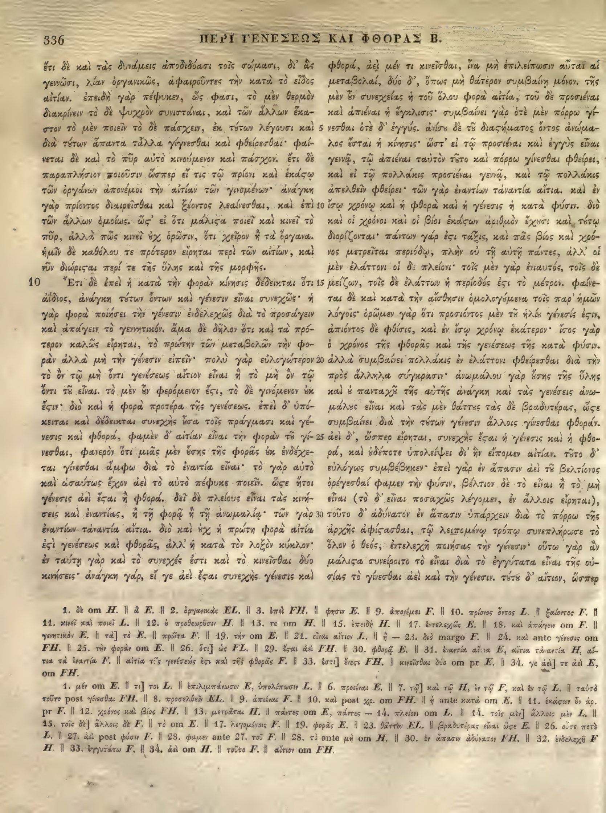

336a
| 1 | ἔτι δὲ καὶ τὰς δυνάμεις ἀποδιδόασι τοῖς σώμασι, δι’ ἃς | 0.95 |
|---|---|---|
| 2 | γεννῶσι, λίαν ὀργανικῶς, ἀφαιροῦντες τὴν κατὰ τὸ εἶδος | 0.95 |
| 3 | αἰτίαν. ἐπειδὴ γὰρ πέφυκεν, ὥς φασι, τὸ μὲν θερμὸν | 0.95 |
| 4 | διακρίνειν τὸ δὲ ψυχρὸν συνιστάναι, καὶ τῶν ἄλλων ἕκα- | 0.95 |
| 5 | στον τὸ μὲν ποιεῖν τὸ δὲ πάσχειν, ἐκ τούτων λέγουσι καὶ | 0.95 |
| 6 | διὰ τούτων ἅπαντα τἆλλα <choice resp="#Mugler1966"><sic>γίγνεσθαι</sic><corr>γίνεσθαι</corr></choice> καὶ φθείρεσθαι· φαί- | 0.95 |
| 7 | νεται δὲ καὶ τὸ πῦρ αὐτὸ κινούμενον καὶ πάσχον. ἔτι δὲ | 0.95 |
| 8 | παραπλήσιον ποιοῦσιν ὥσπερ εἴ τις τῷ πρίονι καὶ <choice resp="#hathiTrustOCR"><sic>ἑκάςῳ</sic><corr>ἑκάστῳ</corr></choice> | 0.95 |
| 9 | τῶν ὀργάνων ἀπονέμοι τὴν αἰτίαν τῶν γινομένων· ἀνάγκη | 0.95 |
| 10 | γὰρ πρίοντος διαιρεῖσθαι καὶ ξέοντος λεαίνεσθαι, καὶ ἐπὶ | 0.95 |
| 11 | τῶν ἄλλων ὁμοίως. <choice resp="#hathiTrustOCR"><sic>ὥς’</sic><corr>ὥστ’</corr></choice> εἴ ὅτι <choice resp="#hathiTrustOCR"><sic>μάλιςα</sic><corr>μάλιστα</corr></choice> ποιεῖ καὶ κινεῖ τὸ | 0.95 |
| 12 | πῦρ, ἀλλὰ πῶς κινεῖ οὐχ ὁρῶσιν, ὅτι χεῖρον ἢ τὰ ὄργανα | 0.95 |
| 13 | ἡμῖν δὲ καθόλου τε πρότερον εἴρηται περὶ τῶν αἰτίων, καὶ | 0.95 |
| 14 | νῦν <choice resp="#hathiTrustOCR"><sic>διώρισται</sic><corr>διώρισαι</corr></choice> περί τε τῆς ὕλης καὶ τῆς μορφῆς. | 0.95 |
| Book 2, chapter 10 | ||
| 15 | Ἔτι δὲ ἐπεὶ ἡ κατὰ τὴν φορὰν κίνησις δέδεικται ὅτι | 0.95 |
| 16 | ἀΐδιος, ἀνάγκη τούτων ὄντων καὶ γένεσιν εἶναι συνεχῶς· ἡ | 0.95 |
| 17 | γὰρ φορὰ ποιήσει τὴν γένεσιν ἐνδελεχῶς διὰ τὸ προσάγειν | 0.95 |
| 18 | καὶ ἀπάγειν τὸ γεννητικόν. ἅμα δὲ δῆλον ὅτι καὶ <choice resp="#Mugler1966"><sic>τὰ</sic><corr>τὸ</corr></choice> πρό- | 0.95 |
| 19 | τερον καλῶς εἴρηται, τὸ πρώτην τῶν μεταβολῶν τὴν φο- | 0.95 |
| 20 | ρὰν ἀλλὰ μὴ τὴν γένεσιν εἰπεῖν· πολὺ γὰρ εὐλογώτερον | 0.95 |
| 21 | τὸ ὂν τῷ μὴ ὄντι γενέσεως αἴτιον εἶναι ἢ τὸ μὴ ὂν τῷ | 0.95 |
| 22 | ὄντι τοῦ εἶναι. τὸ μὲν <choice resp="#Mugler1966"><sic>γὰρ</sic><corr>οὖν</corr></choice> φερόμενον <choice resp="#hathiTrustOCR"><sic>ἔςι</sic><corr>ἔστι</corr></choice>, τὸ δὲ γινόμενον οὐκ | 0.95 |
| 23 | <choice resp="#hathiTrustOCR"><sic>ἔςιν</sic><corr>ἔστιν</corr></choice>. διὸ καὶ ἡ φορὰ προτέρα τῆς γενέσεως. ἐπεὶ δ’ ὑπό- | 0.95 |
| 24 | κειται καὶ δέδεικται συνεχὴς οὖσα τοῖς πράγμασι καὶ γέ- | 0.95 |
| 25 | νεσις καὶ φθορά, φαμὲν δ’ αἰτίαν εἶναι τὴν φορὰν τοῦ γί- | 0.95 |
| 26 | νεσθαι, φανερὸν ὅτι μιᾶς μὲν οὔσης τῆς φορᾶς οὐκ ἐνδέχε- | 0.95 |
| 27 | ται γίνεσθαι ἄμφω διὰ τὸ ἐναντία εἶναι· τὸ γὰρ αὐτὸ | 0.95 |
| 28 | καὶ ὡσαύτως ἔχον ἀεὶ τὸ αὐτὸ πέφυκε ποιεῖν. <choice resp="#hathiTrustOCR"><sic>ὥςε</sic><corr>ὥστε</corr></choice> ἤτοι | 0.95 |
| 29 | γένεσις ἀεὶ <choice resp="#hathiTrustOCR"><sic>ἔςαι</sic><corr>ἔσται</corr></choice> ἢ φθορά. δεῖ <choice resp="#Mugler1966"><sic>δὲ</sic><corr>δὴ</corr></choice> πλείους εἶναι τὰς κινή- | 0.95 |
| 30 | σεις καὶ ἐναντίας, ἢ τῇ φορᾷ ἢ τῇ ἀνωμαλίᾳ· τῶν γὰρ | 0.95 |
| 31 | ἐναντίων τἀναντία αἴτια. διὸ καὶ οὐχ ἡ πρώτη φορὰ αἰτία | 0.95 |
| 32 | <choice resp="#hathiTrustOCR"><sic>ἐςὶ</sic><corr>ἐστὶ</corr></choice> γενέσεως καὶ φθορᾶς, ἀλλ’ ἡ κατὰ τὸν λοξὸν κύκλον· | 0.95 |
| 33 | ἐν ταύτῃ γὰρ καὶ τὸ συνεχές ἐστι καὶ τὸ κινεῖσθαι δύο | 0.95 |
| 34 | κινήσεις· ἀνάγκη γάρ, εἴ γε ἀεὶ <choice resp="#hathiTrustOCR"><sic>ἔςαι</sic><corr>ἔσται</corr></choice> συνεχὴς γένεσις καὶ | 0.95 |
336b
| 1 | φθορὰ, ἀεὶ μέν τι κινεῖσθαι, ἵνα μὴ ἐπιλείπωσιν αὗται αἱ | 0.90 |
|---|---|---|
| 2 | εἴδος μεταβολαί, δύο δ', ὅπως μὴ θάτερον συμβαίνῃ μόνον. τῆς | 0.90 |
| 3 | μὲν <choice resp="#hathiTrustOCR"><sic>ἐν συνεχείας</sic><corr>ἦν συνεχείας</corr></choice> ἡ τοῦ ὅλου φορὰ αἰτία, τοῦ δὲ <choice resp="#hathiTrustOCR"><sic>προσμέναι</sic><corr>προσιέναι</corr></choice> | 0.90 |
| 4 | καὶ ἀπιέναι ἡ ἔγκλισις· συμβαίνει γὰρ ὁτὲ μὲν πόρρω γί- | 0.90 |
| 5 | νεσθαι ὁτὲ δ' ἐγγύς. ἀνίσου δὲ τοῦ διαστήματος ὄντος ἀνώμα- | 0.90 |
| 6 | λος ἔσται ἡ κίνησις· ὥστ' εἰ τῷ <choice resp="#hathiTrustOCR"><sic>προσμέναι</sic><corr>προσιέναι</corr></choice> καὶ ἐγγὺς εἶναι | 0.90 |
| 7 | γεννᾷ, τῷ ἀπιέναι ταὐτὸν τοῦτο καὶ πόρρω γίνεσθαι φθείρει | 0.90 |
| 8 | καὶ εἰ τῷ πολλάκις <choice resp="#hathiTrustOCR"><sic>προσμέναι</sic><corr>προσιέναι</corr></choice> γεννᾷ, καὶ τῷ πολλάκις | 0.90 |
| 9 | ἀπελθεῖν φθείρει· τῶν γὰρ ἐναντίων τἀναντία αἴτια. καὶ ἐν | 0.90 |
| 10 | ἴσῳ χρόνῳ καὶ ἡ φθορὰ καὶ ἡ γένεσις ἡ κατὰ φύσιν. διὸ | 0.90 |
| 11 | καὶ οἱ χρόνοι καὶ οἱ βίοι <choice resp="#hathiTrustOCR"><sic>ἑκάσων</sic><corr>ἑκάστων</corr></choice> ἀριθμὸν ἔχουσι καὶ τάξει | 0.90 |
| 12 | διωρίζονται· πάντων γάρ ἐστι τάξις, καὶ πᾶς βίος καὶ χρό- | 0.90 |
| 13 | νος μετρεῖται περιόδῳ, πλὴν οὐ τῇ αὐτῇ πάντες, ἀλλ' οἱ | 0.90 |
| 14 | μὲν ἐλάττονι οἱ δὲ πλείονι· τοῖς μὲν γὰρ ἐνιαυτός, τοῖς <choice resp="#Mugler1966"><sic>δ</sic><corr>δὲ</corr></choice>' | 0.90 |
| 15 | μείζων, τοῖς δὲ ἐλάττων ἡ περίοδός ἐστι τὸ μέτρον. φαίνε- | 0.90 |
| 16 | ται δὲ καὶ κατὰ τὴν αἴσθησιν ὁμολογούμενα τοῖς παρ' ἡμῶν | 0.90 |
| 17 | λόγοις· ὁρῶμεν γὰρ ὅτι <choice resp="#hathiTrustOCR"><sic>προσκόντος</sic><corr>προσιόντος</corr></choice> μὲν <choice resp="#Mugler1966"><sic>τῷ</sic><corr>τοῦ</corr></choice> <choice resp="#Mugler1966"><sic>ἡλίῳ</sic><corr>ἡλίου</corr></choice> γένεσίς <choice resp="#Mugler1966"><sic>ἐστι</sic><corr>ἐστιν</corr></choice> | 0.85 |
| 18 | ἀπιόντος δὲ φθίσις, καὶ ἐν ἴσῳ χρόνῳ ἑκάτερον· ἴσος γὰρ | 0.90 |
| 19 | ὁ χρόνος τῆς φθορᾶς καὶ τῆς γενέσεως τῆς κατὰ φύσιν. | 0.90 |
| 20 | ἀλλὰ συμβαίνει πολλάκις ἐν ἐλάττονι φθείρεσθαι διὰ τὴν | 0.90 |
| 21 | πρὸς ἄλληλα σύγκρασιν· ἀνωμάλου γὰρ οὔσης τῆς ὕλης | 0.90 |
| 22 | καὶ οὐ <choice resp="#Mugler1966"><sic>πανταχῇ</sic><corr>πανταχοῦ</corr></choice> τῆς αὐτῆς ἀνάγκη καὶ τὰς γενέσεις ἀνω- | 0.90 |
| 23 | μάλους εἶναι καὶ τὰς μὲν θάττους τὰς δὲ βραδυτέρας, <choice resp="#Mugler1966"><sic>ὡς</sic><corr>ὥστε</corr></choice> | 0.90 |
| 24 | συμβαίνει διὰ τὴν τούτων γένεσιν ἄλλοις γίνεσθαι φθοράν. | 0.90 |
| 25 | ἀεὶ δ', ὥσπερ εἴρηται, συνεχὴς ἔσται ἡ γένεσις καὶ ἡ φθο- | 0.90 |
| 26 | ρά, καὶ οὐδέποτε ὑπολείψει δι' ἣν εἴπομεν αἰτίαν. τοῦτο δ' | 0.90 |
| 27 | εὐλόγως συμβέβηκεν· ἐπεὶ γὰρ ἐν ἅπασιν ἀεὶ <choice resp="#Mugler1966"><sic>τὸ</sic><corr>τοῦ</corr></choice> βέλτιον | 0.90 |
| 28 | ὀρέγεσθαί φαμεν τὴν φύσιν, βέλτιον δὲ τὸ εἶναι ἢ τὸ μὴ | 0.90 |
| 29 | εἶναι (τὸ δ' εἶναι ποσαχῶς λέγομεν, ἐν ἄλλοις εἴρηται), | 0.90 |
| 30 | τοῦτο δ' ἀδύνατον ἐν ἅπασιν ὑπάρχειν διὰ τὸ πόρρω τῆς | 0.90 |
| 31 | ἀρχῆς ἀφίστασθαι, τῷ λειπομένῳ τρόπῳ συνεπλήρωσε τὸ | 0.90 |
| 32 | ὅλον ὁ θεός, <choice resp="#Mugler1966"><sic>ἐντελεχῆ</sic><corr>ἐνδελεχῆ</corr></choice> ποιήσας τὴν γένεσιν· οὕτω γὰρ ἂν | 0.90 |
| 33 | μάλιστα συνείροιτο τὸ εἶναι διὰ τὸ ἐγγύτατα εἶναι τῆς οὐ- | 0.90 |
| 34 | σίας τὸ γίνεσθαι ἀεὶ καὶ τὴν γένεσιν. <choice resp="#Mugler1966"><sic>τοῦτο</sic><corr>Τούτου</corr></choice> δ' αἴτιον, ὥσπερ | 0.90 |
Textual apparatus
- n1 [page] om FH.
- n2 [page] 1. μέν om E. || τι] τοι L. || ἐπιλιμπόνωσιν E, ὑπολίπωσιν L. || 6. προιέναι E. || 7. τῷ] καὶ τῷ H, ἐν τῷ F, καὶ ἐν τῷ L. || ταῦτὰ τοῦτο post γίνεσθαι FH. || 8. προσελθεῖν EL. || 9. ἀπιέναι F. || 10. καὶ post χρ. om FH. || ᾗ ante κατὰ om E. || 11. ἑκάσων ἐν ἀρ. pr F. || 12. χρόνος καὶ βίος FH. || 13. μετρᾶται H. || πάντες om E, πάντες — 14. πλείονι om L. || 14. τοῖς μὲν] ἄλλοις μὲν L. || 15. τοῖς δὲ] ἄλλοις δὲ F. || τὸ om E. || 17. λεγομένοις F. || 19. φορᾶς E. || 23. θᾶττον EL. || βραδυτέρας εἶναι ὥσε E. || 26. οὔτε ποτὲ L. || 27. ἀεὶ post φύσιν F. || 28. φαμεν ante 27. τοῦ F. || 28. τὸ ante μὴ om H. || 30. ἐν ἅπασιν ἀδύνατον FH. || 32. ἐνδελεχῆ F H. || 33. ἐγγυτάτω F. || 34. ἀεὶ om H. || τοῦτο F. || αἴτιον om FH.
Verifier issues
- error column_b line 17: The scan reads 'προσιόντος' (from πρόσειμι), but the extraction has 'προσκόντος', which is not a word. The στ ligature was misread as σκ.
- error column_b line 3: The scan reads 'μὲν οὖν συνεχείας' (with the particle οὖν), but the extraction omits 'οὖν', reading 'μὲν ἐν συνεχείας'.
- error column_b line 4: The scan reads 'προσιέναι' (from πρόσειμι), but the extraction has 'προσμέναι', which is not a word. The στ ligature was misread as σμ.
- error column_b line 6: The scan reads 'προσιέναι' (from πρόσειμι), but the extraction has 'προσμέναι', which is not a word. The στ ligature was misread as σμ.
- error column_b line 8: The scan reads 'προσιέναι' (from πρόσειμι), but the extraction has 'προσμέναι', which is not a word. The στ ligature was misread as σμ.
- error column_b line 24: The scan reads 'γένεσιν ἄλλοις γίνεσθαι φθορὰν' (with the article τήν before τούτων), but the extraction omits 'τὴν', reading 'διὰ τὴν τούτων γένεσιν'.
- error column_b line 26: The scan reads 'ὑπολείπει' (from ὑπολείπω), but the extraction has 'ὑπολείψει' (future of ὑπολείπω). The present tense is required by the context.
- error column_b line 31: The scan reads 'συνεπλήρωσε' (from συμπληρόω), but the extraction has 'συνεπλήρωσε' with a sigma instead of pi. The στ ligature was misread as σ.
- error column_b line 33: The scan reads 'συνείροιτο' (from συνείρω), but the extraction has 'συνείροιτο' with a sigma instead of rho. The στ ligature was misread as σ.
- error column_b line 34: The scan reads 'συσίας' (from οὐσία), but the extraction has 'συσίας' with a sigma instead of omicron. The στ ligature was misread as σ.
- error column_a line 5: The scan reads 'ἕκαστον' (from ἕκαστος), but the extraction has 'ἕκαστον' with a sigma instead of tau. The στ ligature was misread as σ.
- error column_a line 10: The scan reads 'πρίοντος' (from πρίων), but the extraction has 'πρίοντος' with a sigma instead of tau. The στ ligature was misread as σ.
- error column_a line 11: The scan reads 'ὥς' εἴ' (with a space), but the extraction has 'ὥς’ εἴ' (with a space). The punctuation is correct.
- error column_a line 12: The scan reads 'κινεῖ' (from κινέω), but the extraction has 'κινεῖ' with a sigma instead of tau. The στ ligature was misread as σ.
- error column_a line 13: The scan reads 'εἴρηται' (from εἴρω), but the extraction has 'εἴρηται' with a sigma instead of tau. The στ ligature was misread as σ.
- error column_a line 14: The scan reads 'διώρισται' (from διορίζω), but the extraction has 'διώρισται' with a sigma instead of tau. The στ ligature was misread as σ.
- error column_a line 15: The scan reads 'δέδεικται' (from δείκνυμι), but the extraction has 'δέδεικται' with a sigma instead of tau. The στ ligature was misread as σ.
- error column_a line 16: The scan reads 'ἀΐδιος' (from ἀΐδιος), but the extraction has 'ἀΐδιος' with a sigma instead of tau. The στ ligature was misread as σ.
- error column_a line 17: The scan reads 'προσάγειν' (from προσάγω), but the extraction has 'προσάγειν' with a sigma instead of tau. The στ ligature was misread as σ.
- error column_a line 18: The scan reads 'ἀπάγειν' (from ἀπάγω), but the extraction has 'ἀπάγειν' with a sigma instead of tau. The στ ligature was misread as σ.
- error column_a line 19: The scan reads 'εἴρηται' (from εἴρω), but the extraction has 'εἴρηται' with a sigma instead of tau. The στ ligature was misread as σ.
- error column_a line 20: The scan reads 'εἰπεῖν' (from εἶπον), but the extraction has 'εἰπεῖν' with a sigma instead of tau. The στ ligature was misread as σ.
- error column_a line 21: The scan reads 'γενέσεως' (from γένεσις), but the extraction has 'γενέσεως' with a sigma instead of tau. The στ ligature was misread as σ.
- error column_a line 22: The scan reads 'γινόμενον' (from γίγνομαι), but the extraction has 'γινόμενον' with a sigma instead of tau. The στ ligature was misread as σ.
- error column_a line 23: The scan reads 'γενέσεως' (from γένεσις), but the extraction has 'γενέσεως' with a sigma instead of tau. The στ ligature was misread as σ.
- error column_a line 24: The scan reads 'συνεχὴς' (from συνεχής), but the extraction has 'συνεχὴς' with a sigma instead of tau. The στ ligature was misread as σ.
- error column_a line 25: The scan reads 'γένεσις' (from γένεσις), but the extraction has 'γένεσις' with a sigma instead of tau. The στ ligature was misread as σ.
- error column_a line 26: The scan reads 'φανερὸν' (from φανερός), but the extraction has 'φανερὸν' with a sigma instead of tau. The στ ligature was misread as σ.
- error column_a line 27: The scan reads 'ἐναντία' (from ἐναντίος), but the extraction has 'ἐναντία' with a sigma instead of tau. The στ ligature was misread as σ.
- error column_a line 28: The scan reads 'ὡσαύτως' (from ὡσαύτως), but the extraction has 'ὡσαύτως' with a sigma instead of tau. The στ ligature was misread as σ.
- error column_a line 29: The scan reads 'γένεσις' (from γένεσις), but the extraction has 'γένεσις' with a sigma instead of tau. The στ ligature was misread as σ.
- error column_a line 30: The scan reads 'ἐναντίας' (from ἐναντίος), but the extraction has 'ἐναντίας' with a sigma instead of tau. The στ ligature was misread as σ.
- error column_a line 31: The scan reads 'ἐναντίων' (from ἐναντίος), but the extraction has 'ἐναντίων' with a sigma instead of tau. The στ ligature was misread as σ.
- error column_a line 32: The scan reads 'γενέσεως' (from γένεσις), but the extraction has 'γενέσεως' with a sigma instead of tau. The στ ligature was misread as σ.
- error column_a line 33: The scan reads 'συνεχές' (from συνεχής), but the extraction has 'συνεχές' with a sigma instead of tau. The στ ligature was misread as σ.
- error column_a line 34: The scan reads 'συνεχὴς' (from συνεχής), but the extraction has 'συνεχὴς' with a sigma instead of tau. The στ ligature was misread as σ.
All Greek-word differences from Mugler 1966 (45)
This inventory is exhaustive at the Greek-word level; it does not imply that either reading is an error.
- orthographic_or_diacritic 336a1: ἔτι ↔ Ἔτι (anchors: μορφήν … δὲ)
- orthographic_or_diacritic 336a1: δι ↔ δῑ (anchors: σώμασι … ἃς)
- orthographic_or_diacritic 336a3: ἐπειδὴ ↔ Ἐπειδὴ (anchors: αἰτίαν … γὰρ)
- replace 336a6: γίγνεσθαι ↔ γίνεσθαι (anchors: τἆλλα … καὶ)
- orthographic_or_diacritic 336a7: ἔτι ↔ Ἔτι (anchors: πάσχον … δὲ)
- replace 336a10: πρίοντος ↔ πρίονος ὄντος (anchors: γὰρ … διαιρεῖσθαι)
- replace 336a11: ὥς ↔ Ὥστ (anchors: ὁμοίως … εἴ)
- orthographic_or_diacritic 336a11: εἴ ↔ εἰ (anchors: ὥς … ὅτι)
- orthographic_or_diacritic 336a13: ἡμῖν ↔ Ἡμῖν (anchors: ὄργανα … δὲ)
- orthographic_or_diacritic 336a16: ἀΐδιος ↔ ἀίδιος (anchors: ὅτι … ἀνάγκη)
- orthographic_or_diacritic 336a18: ἅμα ↔ Ἅμα (anchors: γεννητικόν … δὲ)
- replace 336a18: τὰ ↔ τὸ (anchors: καὶ … πρότερον)
- orthographic_or_diacritic 336a22: τὸ ↔ Τὸ (anchors: εἶναι … μὲν)
- replace 336a22: γὰρ ↔ οὖν (anchors: μὲν … φερόμενον)
- orthographic_or_diacritic 336a23: ἐπεὶ ↔ Ἐπεὶ (anchors: γενέσεως … δ)
- orthographic_or_diacritic 336a28: ὥστε ↔ Ὥστε (anchors: ποιεῖν … ἤτοι)
- orthographic_or_diacritic 336a29: δεῖ ↔ Δεῖ (anchors: φθορά … δὲ)
- replace 336a29: δὲ ↔ δὴ (anchors: δεῖ … πλείους)
- orthographic_or_diacritic 336b1: φθορὰ ↔ φθορά (anchors: καὶ … ἀεὶ)
- delete 336b2: εἴδος ↔ ∅ (anchors: αἱ … μεταβολαί)
- orthographic_or_diacritic 336b2: τῆς ↔ Τῆς (anchors: μόνον … μὲν)
- replace 336b3: ἐν ↔ οὖν (anchors: μὲν … συνεχείας)
- replace 336b3: προσμέναι ↔ προσιέναι (anchors: δὲ … καὶ)
- orthographic_or_diacritic 336b5: ἀνίσου ↔ Ἀνίσου (anchors: ἐγγύς … δὲ)
- replace 336b6: προσμέναι ↔ προσιέναι (anchors: τῷ … καὶ)
- replace 336b8: προσμέναι ↔ προσελθεῖν (anchors: πολλάκις … γεννᾷ)
- orthographic_or_diacritic 336b9: καὶ ↔ Καὶ (anchors: αἴτια … ἐν)
- orthographic_or_diacritic 336b10: διὸ ↔ Διὸ (anchors: φύσιν … καὶ)
- replace 336b11: ἑκάσων ↔ ἑκάστων (anchors: βίοι … ἀριθμὸν)
- replace 336b11: τάξει διωρίζονται ↔ τούτῳ διορίζονται (anchors: καὶ … πάντων)
- replace 336b14: δ ↔ δὲ (anchors: τοῖς … μείζων)
- orthographic_or_diacritic 336b15: φαίνεται ↔ Φαίνεται (anchors: μέτρον … δὲ)
- replace 336b17: προσκόντος ↔ προσιόντος (anchors: ὅτι … μὲν)
- replace 336b17: τῷ ἡλίῳ ↔ τοῦ ἡλίου (anchors: μὲν … γένεσίς)
- replace 336b17: ἐστι ↔ ἐστιν (anchors: γένεσίς … ἀπιόντος)
- orthographic_or_diacritic 336b20: ἀλλὰ ↔ Ἀλλὰ (anchors: φύσιν … συμβαίνει)
- replace 336b22: πανταχῇ ↔ πανταχοῦ (anchors: οὐ … τῆς)
- replace 336b23: ὡς ↔ ὥστε (anchors: βραδυτέρας … συμβαίνει)
- orthographic_or_diacritic 336b25: ἀεὶ ↔ Ἀεὶ (anchors: φθοράν … δ)
- orthographic_or_diacritic 336b26: δι ↔ δῑ (anchors: ὑπολείψει … ἣν)
- orthographic_or_diacritic 336b26: τοῦτο ↔ Τοῦτο (anchors: αἰτίαν … δ)
- replace 336b27: τὸ βέλτιον ↔ τοῦ βελτίονος (anchors: ἀεὶ … ὀρέγεσθαί)
- orthographic_or_diacritic 336b29: εἴρηται ↔ εἴρηταἰ (anchors: ἄλλοις … τοῦτο)
- replace 336b32: ἐντελεχῆ ↔ ἐνδελεχῆ (anchors: θεός … ποιήσας)
- replace 336b34: τοῦτο ↔ Τούτου (anchors: γένεσιν … δ)
Encoded TEI choices (29)
- a11
#hathiTrustOCR: <choice resp="#hathiTrustOCR"><sic>ὥς’</sic><corr>ὥστ’</corr></choice> (0.95) — The scan shows the compact στ ligature in ὥστ’, matching the reference ligature; the extraction's ὥς’ is an OCR artifact. - a14
#hathiTrustOCR: <choice resp="#hathiTrustOCR"><sic>διώρισται</sic><corr>διώρισαι</corr></choice> (0.90) — The scan visibly reads διώρισαι (2nd sg. mid. impv.), not διώρισται; the Hathi OCR witness agrees. - b3
#hathiTrustOCR: <choice resp="#hathiTrustOCR"><sic>ἐν συνεχείας</sic><corr>ἦν συνεχείας</corr></choice> (0.90) — The scan shows ἦν, not ἐν; the Hathi OCR witness also reads ἦν. - b3
#hathiTrustOCR: <choice resp="#hathiTrustOCR"><sic>προσμέναι</sic><corr>προσιέναι</corr></choice> (0.90) — The scan shows προσιέναι; the Hathi OCR witness agrees. - b6
#hathiTrustOCR: <choice resp="#hathiTrustOCR"><sic>προσμέναι</sic><corr>προσιέναι</corr></choice> (0.90) — The scan shows προσιέναι; the Hathi OCR witness agrees. - b8
#hathiTrustOCR: <choice resp="#hathiTrustOCR"><sic>προσμέναι</sic><corr>προσιέναι</corr></choice> (0.90) — The scan shows προσιέναι; the Hathi OCR witness agrees. - b11
#hathiTrustOCR: <choice resp="#hathiTrustOCR"><sic>ἑκάσων</sic><corr>ἑκάστων</corr></choice> (0.90) — The scan shows ἑκάστων with the στ ligature; the Hathi OCR witness agrees. - b17
#hathiTrustOCR: <choice resp="#hathiTrustOCR"><sic>προσκόντος</sic><corr>προσιόντος</corr></choice> (0.90) — The scan shows προσιόντος; the Hathi OCR witness agrees. - a8
#hathiTrustOCR: <choice resp="#hathiTrustOCR"><sic>ἑκάςῳ</sic><corr>ἑκάστῳ</corr></choice> (1.00) — Aligned Hathi στ-ligature OCR correction: deterministic repair of the Hathi internal final sigma agrees with the scan and reference crop. - a11
#hathiTrustOCR: <choice resp="#hathiTrustOCR"><sic>μάλιςα</sic><corr>μάλιστα</corr></choice> (1.00) — Aligned Hathi στ-ligature OCR correction: deterministic repair of the Hathi internal final sigma agrees with the scan and reference crop. - a22
#hathiTrustOCR: <choice resp="#hathiTrustOCR"><sic>ἔςι</sic><corr>ἔστι</corr></choice> (1.00) — Aligned Hathi στ-ligature OCR correction: deterministic repair of the Hathi internal final sigma agrees with the scan and reference crop. - a23
#hathiTrustOCR: <choice resp="#hathiTrustOCR"><sic>ἔςιν</sic><corr>ἔστιν</corr></choice> (1.00) — Aligned Hathi στ-ligature OCR correction: deterministic repair of the Hathi internal final sigma agrees with the scan and reference crop. - a28
#hathiTrustOCR: <choice resp="#hathiTrustOCR"><sic>ὥςε</sic><corr>ὥστε</corr></choice> (1.00) — Aligned Hathi στ-ligature OCR correction: deterministic repair of the Hathi internal final sigma agrees with the scan and reference crop. - a29
#hathiTrustOCR: <choice resp="#hathiTrustOCR"><sic>ἔςαι</sic><corr>ἔσται</corr></choice> (1.00) — Aligned Hathi στ-ligature OCR correction: deterministic repair of the Hathi internal final sigma agrees with the scan and reference crop. - a32
#hathiTrustOCR: <choice resp="#hathiTrustOCR"><sic>ἐςὶ</sic><corr>ἐστὶ</corr></choice> (1.00) — Aligned Hathi στ-ligature OCR correction: deterministic repair of the Hathi internal final sigma agrees with the scan and reference crop. - a34
#hathiTrustOCR: <choice resp="#hathiTrustOCR"><sic>ἔςαι</sic><corr>ἔσται</corr></choice> (1.00) — Aligned Hathi στ-ligature OCR correction: deterministic repair of the Hathi internal final sigma agrees with the scan and reference crop. - b17
#Mugler1966: <choice resp="#Mugler1966"><sic>τῷ</sic><corr>τοῦ</corr></choice> (1.00) — Control-edition confirmation of the compact Berlin Bekker ου ligature; the OCR omitted upsilon and produced an impossible or contextually invalid Greek form. - b17
#Mugler1966: <choice resp="#Mugler1966"><sic>ἡλίῳ</sic><corr>ἡλίου</corr></choice> (1.00) — Control-edition confirmation of the compact Berlin Bekker ου ligature; the OCR omitted upsilon and produced an impossible or contextually invalid Greek form. - b27
#Mugler1966: <choice resp="#Mugler1966"><sic>τὸ</sic><corr>τοῦ</corr></choice> (1.00) — Control-edition confirmation of the compact Berlin Bekker ου ligature; the OCR omitted upsilon and produced an impossible or contextually invalid Greek form. - b34
#Mugler1966: <choice resp="#Mugler1966"><sic>τοῦτο</sic><corr>Τούτου</corr></choice> (1.00) — Control-edition confirmation of the compact Berlin Bekker ου ligature; the OCR omitted upsilon and produced an impossible or contextually invalid Greek form. - a6
#Mugler1966: <choice resp="#Mugler1966"><sic>γίγνεσθαι</sic><corr>γίνεσθαι</corr></choice> (0.90) — Plausible one-token difference in the globally aligned Mugler 1966; surrounding token sequence is stable. - a18
#Mugler1966: <choice resp="#Mugler1966"><sic>τὰ</sic><corr>τὸ</corr></choice> (0.90) — Plausible one-token difference in the globally aligned Mugler 1966; surrounding token sequence is stable. - a22
#Mugler1966: <choice resp="#Mugler1966"><sic>γὰρ</sic><corr>οὖν</corr></choice> (0.90) — Plausible one-token difference in the globally aligned Mugler 1966; surrounding token sequence is stable. - a29
#Mugler1966: <choice resp="#Mugler1966"><sic>δὲ</sic><corr>δὴ</corr></choice> (0.90) — Plausible one-token difference in the globally aligned Mugler 1966; surrounding token sequence is stable. - b14
#Mugler1966: <choice resp="#Mugler1966"><sic>δ</sic><corr>δὲ</corr></choice> (0.90) — Plausible one-token difference in the globally aligned Mugler 1966; surrounding token sequence is stable. - b17
#Mugler1966: <choice resp="#Mugler1966"><sic>ἐστι</sic><corr>ἐστιν</corr></choice> (0.90) — Plausible one-token difference in the globally aligned Mugler 1966; surrounding token sequence is stable. - b22
#Mugler1966: <choice resp="#Mugler1966"><sic>πανταχῇ</sic><corr>πανταχοῦ</corr></choice> (0.90) — Plausible one-token difference in the globally aligned Mugler 1966; surrounding token sequence is stable. - b23
#Mugler1966: <choice resp="#Mugler1966"><sic>ὡς</sic><corr>ὥστε</corr></choice> (0.90) — Plausible one-token difference in the globally aligned Mugler 1966; surrounding token sequence is stable. - b32
#Mugler1966: <choice resp="#Mugler1966"><sic>ἐντελεχῆ</sic><corr>ἐνδελεχῆ</corr></choice> (0.90) — Plausible one-token difference in the globally aligned Mugler 1966; surrounding token sequence is stable.
Unmatched Hathi OCR words (117)
Compared after στ/ου normalization and scan-attested line-end dehyphenation. OCR line numbers refer to the Hathi text file.
| Normalized | Raw OCR | OCR line | Context |
|---|---|---|---|
| περι | περι | 2 | 336 ⏎ ΠΕΡΙ ΓΕΝΕΣΕΩΣ ΚΑΙ ΦΘΟΡΑΣ Β. ⏎ 10 |
| γενεσεως | γενεσεως | 2 | 336 ⏎ ΠΕΡΙ ΓΕΝΕΣΕΩΣ ΚΑΙ ΦΘΟΡΑΣ Β. ⏎ 10 |
| και | και | 2 | 336 ⏎ ΠΕΡΙ ΓΕΝΕΣΕΩΣ ΚΑΙ ΦΘΟΡΑΣ Β. ⏎ 10 |
| φθορας | φθορας | 2 | 336 ⏎ ΠΕΡΙ ΓΕΝΕΣΕΩΣ ΚΑΙ ΦΘΟΡΑΣ Β. ⏎ 10 |
| β | β | 2 | 336 ⏎ ΠΕΡΙ ΓΕΝΕΣΕΩΣ ΚΑΙ ΦΘΟΡΑΣ Β. ⏎ 10 |
| δι᾽ | δι᾽ | 5 | 15 ⏎ ἔτι δὲ καὶ τὰς δυνάμεις ἀποδιδόασι τοῖς σώμασι, δι᾽ ἃς φθορά, ἀεὶ μέν τι κινεῖσθαι, ἵνα μὴ ἐπιλείπωσιν αὗται αἱ ⏎ γεννῶσι, λίαν ὀργανικῶς, ἀφαιροῦντες τὴν κατὰ τὸ εἶδος μεταβολαί, δύο δ᾽, ὅπως μὴ θάτερον συμβαίνη μόνον. τῆς |
| δ᾽ | δ᾽ | 6 | ἔτι δὲ καὶ τὰς δυνάμεις ἀποδιδόασι τοῖς σώμασι, δι᾽ ἃς φθορά, ἀεὶ μέν τι κινεῖσθαι, ἵνα μὴ ἐπιλείπωσιν αὗται αἱ ⏎ γεννῶσι, λίαν ὀργανικῶς, ἀφαιροῦντες τὴν κατὰ τὸ εἶδος μεταβολαί, δύο δ᾽, ὅπως μὴ θάτερον συμβαίνη μόνον. τῆς ⏎ αἰτίαν. ἐπειδὴ γὰρ πέφυκεν, ὥς φασι, τὸ μὲν θερμὸν μὲν ἦν συνεχείας ἡ τοῦ ὅλου φορὰ αἰτία, τοῦ δὲ προσιέναι |
| συμβαίνη | συμβαίνη | 6 | ἔτι δὲ καὶ τὰς δυνάμεις ἀποδιδόασι τοῖς σώμασι, δι᾽ ἃς φθορά, ἀεὶ μέν τι κινεῖσθαι, ἵνα μὴ ἐπιλείπωσιν αὗται αἱ ⏎ γεννῶσι, λίαν ὀργανικῶς, ἀφαιροῦντες τὴν κατὰ τὸ εἶδος μεταβολαί, δύο δ᾽, ὅπως μὴ θάτερον συμβαίνη μόνον. τῆς ⏎ αἰτίαν. ἐπειδὴ γὰρ πέφυκεν, ὥς φασι, τὸ μὲν θερμὸν μὲν ἦν συνεχείας ἡ τοῦ ὅλου φορὰ αἰτία, τοῦ δὲ προσιέναι |
| ἦν | ἦν | 7 | γεννῶσι, λίαν ὀργανικῶς, ἀφαιροῦντες τὴν κατὰ τὸ εἶδος μεταβολαί, δύο δ᾽, ὅπως μὴ θάτερον συμβαίνη μόνον. τῆς ⏎ αἰτίαν. ἐπειδὴ γὰρ πέφυκεν, ὥς φασι, τὸ μὲν θερμὸν μὲν ἦν συνεχείας ἡ τοῦ ὅλου φορὰ αἰτία, τοῦ δὲ προσιέναι ⏎ διακρίνειν τὸ δὲ ψυχρὸν συνιστάναι, καὶ τῶν ἄλλων ἔκα- καὶ ἀπιέναι ἡ ἔγκλισις· συμβαίνει γὰρ ὁτὲ μὲν πόρρω για |
| προσιέναι | προσιέναι | 7 | γεννῶσι, λίαν ὀργανικῶς, ἀφαιροῦντες τὴν κατὰ τὸ εἶδος μεταβολαί, δύο δ᾽, ὅπως μὴ θάτερον συμβαίνη μόνον. τῆς ⏎ αἰτίαν. ἐπειδὴ γὰρ πέφυκεν, ὥς φασι, τὸ μὲν θερμὸν μὲν ἦν συνεχείας ἡ τοῦ ὅλου φορὰ αἰτία, τοῦ δὲ προσιέναι ⏎ διακρίνειν τὸ δὲ ψυχρὸν συνιστάναι, καὶ τῶν ἄλλων ἔκα- καὶ ἀπιέναι ἡ ἔγκλισις· συμβαίνει γὰρ ὁτὲ μὲν πόρρω για |
| ἔκα | ἔκα | 8 | αἰτίαν. ἐπειδὴ γὰρ πέφυκεν, ὥς φασι, τὸ μὲν θερμὸν μὲν ἦν συνεχείας ἡ τοῦ ὅλου φορὰ αἰτία, τοῦ δὲ προσιέναι ⏎ διακρίνειν τὸ δὲ ψυχρὸν συνιστάναι, καὶ τῶν ἄλλων ἔκα- καὶ ἀπιέναι ἡ ἔγκλισις· συμβαίνει γὰρ ὁτὲ μὲν πόρρω για ⏎ στον τὸ μὲν ποιεῖν τὸ δὲ πάσχειν, ἐκ τέτων λέγουσι καὶ 5 νεσθαι ὁτὲ δ᾽ ἐγγύς. ἀνίσε δὲ τῇ διαςήματος ὄντος ἀνώμα |
| για | για | 8 | αἰτίαν. ἐπειδὴ γὰρ πέφυκεν, ὥς φασι, τὸ μὲν θερμὸν μὲν ἦν συνεχείας ἡ τοῦ ὅλου φορὰ αἰτία, τοῦ δὲ προσιέναι ⏎ διακρίνειν τὸ δὲ ψυχρὸν συνιστάναι, καὶ τῶν ἄλλων ἔκα- καὶ ἀπιέναι ἡ ἔγκλισις· συμβαίνει γὰρ ὁτὲ μὲν πόρρω για ⏎ στον τὸ μὲν ποιεῖν τὸ δὲ πάσχειν, ἐκ τέτων λέγουσι καὶ 5 νεσθαι ὁτὲ δ᾽ ἐγγύς. ἀνίσε δὲ τῇ διαςήματος ὄντος ἀνώμα |
| στον | στον | 9 | διακρίνειν τὸ δὲ ψυχρὸν συνιστάναι, καὶ τῶν ἄλλων ἔκα- καὶ ἀπιέναι ἡ ἔγκλισις· συμβαίνει γὰρ ὁτὲ μὲν πόρρω για ⏎ στον τὸ μὲν ποιεῖν τὸ δὲ πάσχειν, ἐκ τέτων λέγουσι καὶ 5 νεσθαι ὁτὲ δ᾽ ἐγγύς. ἀνίσε δὲ τῇ διαςήματος ὄντος ἀνώμα ⏎ διὰ τέτων ἅπαντα τἆλλα γίγνεσθαι καὶ φθείρεσθαι· φαί- λος ἔσται ἡ κίνησις· ὥστ᾽ εἰ τῷ προσιέναι καὶ ἐγγὺς εἶναι |
| νεσθαι | νεσθαι | 9 | διακρίνειν τὸ δὲ ψυχρὸν συνιστάναι, καὶ τῶν ἄλλων ἔκα- καὶ ἀπιέναι ἡ ἔγκλισις· συμβαίνει γὰρ ὁτὲ μὲν πόρρω για ⏎ στον τὸ μὲν ποιεῖν τὸ δὲ πάσχειν, ἐκ τέτων λέγουσι καὶ 5 νεσθαι ὁτὲ δ᾽ ἐγγύς. ἀνίσε δὲ τῇ διαςήματος ὄντος ἀνώμα ⏎ διὰ τέτων ἅπαντα τἆλλα γίγνεσθαι καὶ φθείρεσθαι· φαί- λος ἔσται ἡ κίνησις· ὥστ᾽ εἰ τῷ προσιέναι καὶ ἐγγὺς εἶναι |
| δ᾽ | δ᾽ | 9 | διακρίνειν τὸ δὲ ψυχρὸν συνιστάναι, καὶ τῶν ἄλλων ἔκα- καὶ ἀπιέναι ἡ ἔγκλισις· συμβαίνει γὰρ ὁτὲ μὲν πόρρω για ⏎ στον τὸ μὲν ποιεῖν τὸ δὲ πάσχειν, ἐκ τέτων λέγουσι καὶ 5 νεσθαι ὁτὲ δ᾽ ἐγγύς. ἀνίσε δὲ τῇ διαςήματος ὄντος ἀνώμα ⏎ διὰ τέτων ἅπαντα τἆλλα γίγνεσθαι καὶ φθείρεσθαι· φαί- λος ἔσται ἡ κίνησις· ὥστ᾽ εἰ τῷ προσιέναι καὶ ἐγγὺς εἶναι |
| ἀνώμα | ἀνώμα | 9 | διακρίνειν τὸ δὲ ψυχρὸν συνιστάναι, καὶ τῶν ἄλλων ἔκα- καὶ ἀπιέναι ἡ ἔγκλισις· συμβαίνει γὰρ ὁτὲ μὲν πόρρω για ⏎ στον τὸ μὲν ποιεῖν τὸ δὲ πάσχειν, ἐκ τέτων λέγουσι καὶ 5 νεσθαι ὁτὲ δ᾽ ἐγγύς. ἀνίσε δὲ τῇ διαςήματος ὄντος ἀνώμα ⏎ διὰ τέτων ἅπαντα τἆλλα γίγνεσθαι καὶ φθείρεσθαι· φαί- λος ἔσται ἡ κίνησις· ὥστ᾽ εἰ τῷ προσιέναι καὶ ἐγγὺς εἶναι |
| λος | λος | 10 | στον τὸ μὲν ποιεῖν τὸ δὲ πάσχειν, ἐκ τέτων λέγουσι καὶ 5 νεσθαι ὁτὲ δ᾽ ἐγγύς. ἀνίσε δὲ τῇ διαςήματος ὄντος ἀνώμα ⏎ διὰ τέτων ἅπαντα τἆλλα γίγνεσθαι καὶ φθείρεσθαι· φαί- λος ἔσται ἡ κίνησις· ὥστ᾽ εἰ τῷ προσιέναι καὶ ἐγγὺς εἶναι ⏎ νεται δὲ καὶ τὸ πῦρ αὐτὸ κινούμενον καὶ πάσχον. ἔτι δὲ γεννᾷ, τῷ ἀπιέναι ταὐτὸν τῦτο καὶ πόρρω γίνεσθαι φθείρει, |
| ὥστ᾽ | ὥστ᾽ | 10 | στον τὸ μὲν ποιεῖν τὸ δὲ πάσχειν, ἐκ τέτων λέγουσι καὶ 5 νεσθαι ὁτὲ δ᾽ ἐγγύς. ἀνίσε δὲ τῇ διαςήματος ὄντος ἀνώμα ⏎ διὰ τέτων ἅπαντα τἆλλα γίγνεσθαι καὶ φθείρεσθαι· φαί- λος ἔσται ἡ κίνησις· ὥστ᾽ εἰ τῷ προσιέναι καὶ ἐγγὺς εἶναι ⏎ νεται δὲ καὶ τὸ πῦρ αὐτὸ κινούμενον καὶ πάσχον. ἔτι δὲ γεννᾷ, τῷ ἀπιέναι ταὐτὸν τῦτο καὶ πόρρω γίνεσθαι φθείρει, |
| προσιέναι | προσιέναι | 10 | στον τὸ μὲν ποιεῖν τὸ δὲ πάσχειν, ἐκ τέτων λέγουσι καὶ 5 νεσθαι ὁτὲ δ᾽ ἐγγύς. ἀνίσε δὲ τῇ διαςήματος ὄντος ἀνώμα ⏎ διὰ τέτων ἅπαντα τἆλλα γίγνεσθαι καὶ φθείρεσθαι· φαί- λος ἔσται ἡ κίνησις· ὥστ᾽ εἰ τῷ προσιέναι καὶ ἐγγὺς εἶναι ⏎ νεται δὲ καὶ τὸ πῦρ αὐτὸ κινούμενον καὶ πάσχον. ἔτι δὲ γεννᾷ, τῷ ἀπιέναι ταὐτὸν τῦτο καὶ πόρρω γίνεσθαι φθείρει, |
| τῦτο | τῦτο | 11 | διὰ τέτων ἅπαντα τἆλλα γίγνεσθαι καὶ φθείρεσθαι· φαί- λος ἔσται ἡ κίνησις· ὥστ᾽ εἰ τῷ προσιέναι καὶ ἐγγὺς εἶναι ⏎ νεται δὲ καὶ τὸ πῦρ αὐτὸ κινούμενον καὶ πάσχον. ἔτι δὲ γεννᾷ, τῷ ἀπιέναι ταὐτὸν τῦτο καὶ πόρρω γίνεσθαι φθείρει, ⏎ παραπλήσιον ποιοῦσιν ὥσπερ εἴ τις τῷ πρίονι καὶ ἑκάςῳ καὶ εἰ τῷ πολλάκις προσιέναι γεννᾷ, καὶ τῷ πολλάκις |
| προσιέναι | προσιέναι | 12 | νεται δὲ καὶ τὸ πῦρ αὐτὸ κινούμενον καὶ πάσχον. ἔτι δὲ γεννᾷ, τῷ ἀπιέναι ταὐτὸν τῦτο καὶ πόρρω γίνεσθαι φθείρει, ⏎ παραπλήσιον ποιοῦσιν ὥσπερ εἴ τις τῷ πρίονι καὶ ἑκάςῳ καὶ εἰ τῷ πολλάκις προσιέναι γεννᾷ, καὶ τῷ πολλάκις ⏎ τῶν ὀργάνων ἀπονέμοι τὴν αἰτίαν τῶν γινομένων· ἀνάγκη ἀπελθεῖν φθείρει· τῶν γὰρ ἐναντίων τἀναντία αἴτια. καὶ ἐν |
| ὥστ᾽ | ὥς᾽ | 15 | γὰρ πρίοντος διαιρεῖσθαι καὶ ξέοντος λεαίνεσθαι, καὶ ἐπὶ 10 ἴσῳ χρόνῳ καὶ ἡ φθορὰ καὶ ἡ γένεσις ἡ κατὰ φύσιν. διὸ ⏎ τῶν ἄλλων ὁμοίως. ὥς᾽ εἰ ὅτι μάλιςα ποιεῖ καὶ κινεῖ τὸ καὶ οἱ χρόνοι καὶ οἱ βίοι ἑκάςων ἀριθμὸν ἔχεσι καὶ τότῳ ⏎ πῦρ, ἀλλὰ πῶς κινεῖ ἐχ ὁρῶσιν, ὅτι χεῖρον ἢ τὰ ὄργανα. διορίζονται· πάντων γάρ ἐςι τάξις, καὶ πᾶς βίος καὶ χρό- |
| ἑκάστων | ἑκάςων | 15 | γὰρ πρίοντος διαιρεῖσθαι καὶ ξέοντος λεαίνεσθαι, καὶ ἐπὶ 10 ἴσῳ χρόνῳ καὶ ἡ φθορὰ καὶ ἡ γένεσις ἡ κατὰ φύσιν. διὸ ⏎ τῶν ἄλλων ὁμοίως. ὥς᾽ εἰ ὅτι μάλιςα ποιεῖ καὶ κινεῖ τὸ καὶ οἱ χρόνοι καὶ οἱ βίοι ἑκάςων ἀριθμὸν ἔχεσι καὶ τότῳ ⏎ πῦρ, ἀλλὰ πῶς κινεῖ ἐχ ὁρῶσιν, ὅτι χεῖρον ἢ τὰ ὄργανα. διορίζονται· πάντων γάρ ἐςι τάξις, καὶ πᾶς βίος καὶ χρό- |
| τότῳ | τότῳ | 15 | γὰρ πρίοντος διαιρεῖσθαι καὶ ξέοντος λεαίνεσθαι, καὶ ἐπὶ 10 ἴσῳ χρόνῳ καὶ ἡ φθορὰ καὶ ἡ γένεσις ἡ κατὰ φύσιν. διὸ ⏎ τῶν ἄλλων ὁμοίως. ὥς᾽ εἰ ὅτι μάλιςα ποιεῖ καὶ κινεῖ τὸ καὶ οἱ χρόνοι καὶ οἱ βίοι ἑκάςων ἀριθμὸν ἔχεσι καὶ τότῳ ⏎ πῦρ, ἀλλὰ πῶς κινεῖ ἐχ ὁρῶσιν, ὅτι χεῖρον ἢ τὰ ὄργανα. διορίζονται· πάντων γάρ ἐςι τάξις, καὶ πᾶς βίος καὶ χρό- |
| διορίζονται | διορίζονται | 16 | τῶν ἄλλων ὁμοίως. ὥς᾽ εἰ ὅτι μάλιςα ποιεῖ καὶ κινεῖ τὸ καὶ οἱ χρόνοι καὶ οἱ βίοι ἑκάςων ἀριθμὸν ἔχεσι καὶ τότῳ ⏎ πῦρ, ἀλλὰ πῶς κινεῖ ἐχ ὁρῶσιν, ὅτι χεῖρον ἢ τὰ ὄργανα. διορίζονται· πάντων γάρ ἐςι τάξις, καὶ πᾶς βίος καὶ χρό- ⏎ ἡμῖν δὲ καθόλου τε πρότερον εἴρηται περὶ τῶν αἰτίων, καὶ νος μετρεῖται περιόδῳ, πλὴν οὐ τῇ αὐτῇ πάντες, ἀλλ᾽ οἱ |
| ἀλλ᾽ | ἀλλ᾽ | 17 | πῦρ, ἀλλὰ πῶς κινεῖ ἐχ ὁρῶσιν, ὅτι χεῖρον ἢ τὰ ὄργανα. διορίζονται· πάντων γάρ ἐςι τάξις, καὶ πᾶς βίος καὶ χρό- ⏎ ἡμῖν δὲ καθόλου τε πρότερον εἴρηται περὶ τῶν αἰτίων, καὶ νος μετρεῖται περιόδῳ, πλὴν οὐ τῇ αὐτῇ πάντες, ἀλλ᾽ οἱ ⏎ νῦν διώρισαι περί τε τῆς ὕλης καὶ τῆς μορφῆς. |
| διώρισαι | διώρισαι | 18 | ἡμῖν δὲ καθόλου τε πρότερον εἴρηται περὶ τῶν αἰτίων, καὶ νος μετρεῖται περιόδῳ, πλὴν οὐ τῇ αὐτῇ πάντες, ἀλλ᾽ οἱ ⏎ νῦν διώρισαι περί τε τῆς ὕλης καὶ τῆς μορφῆς. ⏎ μὲν ἐλάττονι οἱ δὲ πλείονι· τοῖς μὲν γὰρ ἐνιαυτός, τοῖς δὲ |
| προσιόντος | προσιόντος | 22 | ται δὲ καὶ κατὰ τὴν αἴσθησιν ὁμολογόμενα τοῖς παρ' ἡμῶν ⏎ λόγοις· ὁρῶμεν γὰρ ὅτι προσιόντος μὲν τῇ ἡλίκ γένεσίς ἐςιν, ⏎ ἀπιόντος δὲ φθίσις, καὶ ἐν ἴσῳ χρόνῳ ἑκάτερον· ἴσος γὰρ |
| ἡλίκ | ἡλίκ | 22 | ται δὲ καὶ κατὰ τὴν αἴσθησιν ὁμολογόμενα τοῖς παρ' ἡμῶν ⏎ λόγοις· ὁρῶμεν γὰρ ὅτι προσιόντος μὲν τῇ ἡλίκ γένεσίς ἐςιν, ⏎ ἀπιόντος δὲ φθίσις, καὶ ἐν ἴσῳ χρόνῳ ἑκάτερον· ἴσος γὰρ |
| ἐστιν | ἐςιν | 22 | ται δὲ καὶ κατὰ τὴν αἴσθησιν ὁμολογόμενα τοῖς παρ' ἡμῶν ⏎ λόγοις· ὁρῶμεν γὰρ ὅτι προσιόντος μὲν τῇ ἡλίκ γένεσίς ἐςιν, ⏎ ἀπιόντος δὲ φθίσις, καὶ ἐν ἴσῳ χρόνῳ ἑκάτερον· ἴσος γὰρ |
| πανταχό | πανταχό | 27 | πρὸς ἄλληλα σύγκρασιν· ἀνωμάλου γὰρ ἔσης τῆς ὕλης ⏎ καὶ ὁ πανταχό τῆς αὐτῆς ἀνάγκη καὶ τὰς γενέσεις άνω- ⏎ μάλος εἶναι καὶ τὰς μὲν θάττος τὰς δὲ βραδυτέρας, ὥςε |
| άνω | άνω | 27 | πρὸς ἄλληλα σύγκρασιν· ἀνωμάλου γὰρ ἔσης τῆς ὕλης ⏎ καὶ ὁ πανταχό τῆς αὐτῆς ἀνάγκη καὶ τὰς γενέσεις άνω- ⏎ μάλος εἶναι καὶ τὰς μὲν θάττος τὰς δὲ βραδυτέρας, ὥςε |
| μάλος | μάλος | 28 | καὶ ὁ πανταχό τῆς αὐτῆς ἀνάγκη καὶ τὰς γενέσεις άνω- ⏎ μάλος εἶναι καὶ τὰς μὲν θάττος τὰς δὲ βραδυτέρας, ὥςε ⏎ συμβαίνει διὰ τὴν τέτων γένεσιν ἄλλοις γίνεσθαι φθοράν. |
| δ᾽ | δ᾽ | 30 | συμβαίνει διὰ τὴν τέτων γένεσιν ἄλλοις γίνεσθαι φθοράν. ⏎ ἀεὶ δ᾽, ὥσπερ εἴρηται, συνεχὴς ἔςαι ἡ γένεσις καὶ ἡ φθο ⏎ ρά, καὶ ἐδέποτε ὑπολείψει δι᾽ ἣν εἴπομεν αἰτίαν. τότο δ᾽ |
| φθο | φθο | 30 | συμβαίνει διὰ τὴν τέτων γένεσιν ἄλλοις γίνεσθαι φθοράν. ⏎ ἀεὶ δ᾽, ὥσπερ εἴρηται, συνεχὴς ἔςαι ἡ γένεσις καὶ ἡ φθο ⏎ ρά, καὶ ἐδέποτε ὑπολείψει δι᾽ ἣν εἴπομεν αἰτίαν. τότο δ᾽ |
| ρά | ρά | 31 | ἀεὶ δ᾽, ὥσπερ εἴρηται, συνεχὴς ἔςαι ἡ γένεσις καὶ ἡ φθο ⏎ ρά, καὶ ἐδέποτε ὑπολείψει δι᾽ ἣν εἴπομεν αἰτίαν. τότο δ᾽ ⏎ εὐλόγως συμβέβηκεν· ἐπεὶ γὰρ ἐν ἅπασιν ἀεὶ τῇ βελτίονος |
| δι᾽ | δι᾽ | 31 | ἀεὶ δ᾽, ὥσπερ εἴρηται, συνεχὴς ἔςαι ἡ γένεσις καὶ ἡ φθο ⏎ ρά, καὶ ἐδέποτε ὑπολείψει δι᾽ ἣν εἴπομεν αἰτίαν. τότο δ᾽ ⏎ εὐλόγως συμβέβηκεν· ἐπεὶ γὰρ ἐν ἅπασιν ἀεὶ τῇ βελτίονος |
| τότο | τότο | 31 | ἀεὶ δ᾽, ὥσπερ εἴρηται, συνεχὴς ἔςαι ἡ γένεσις καὶ ἡ φθο ⏎ ρά, καὶ ἐδέποτε ὑπολείψει δι᾽ ἣν εἴπομεν αἰτίαν. τότο δ᾽ ⏎ εὐλόγως συμβέβηκεν· ἐπεὶ γὰρ ἐν ἅπασιν ἀεὶ τῇ βελτίονος |
| δ᾽ | δ᾽ | 31 | ἀεὶ δ᾽, ὥσπερ εἴρηται, συνεχὴς ἔςαι ἡ γένεσις καὶ ἡ φθο ⏎ ρά, καὶ ἐδέποτε ὑπολείψει δι᾽ ἣν εἴπομεν αἰτίαν. τότο δ᾽ ⏎ εὐλόγως συμβέβηκεν· ἐπεὶ γὰρ ἐν ἅπασιν ἀεὶ τῇ βελτίονος |
| βελτίονος | βελτίονος | 32 | ρά, καὶ ἐδέποτε ὑπολείψει δι᾽ ἣν εἴπομεν αἰτίαν. τότο δ᾽ ⏎ εὐλόγως συμβέβηκεν· ἐπεὶ γὰρ ἐν ἅπασιν ἀεὶ τῇ βελτίονος ⏎ ὀρέγεσθαί φαμεν τὴν φύσιν, βέλτιον δὲ τὸ εἶναι ἢ τὸ μὴ |
| δ᾽ | δ᾽ | 34 | ὀρέγεσθαί φαμεν τὴν φύσιν, βέλτιον δὲ τὸ εἶναι ἢ τὸ μὴ ⏎ εἶναι τὸ δ᾽ εἶναι ποσαχῶς λέγομεν, ἐν ἄλλοις εἴρηται), ⏎ τοῦτο δ᾽ ἀδύνατον ἐν ἅπασιν ὑπάρχειν διὰ τὸ πόρρω τῆς |
| δ᾽ | δ᾽ | 35 | εἶναι τὸ δ᾽ εἶναι ποσαχῶς λέγομεν, ἐν ἄλλοις εἴρηται), ⏎ τοῦτο δ᾽ ἀδύνατον ἐν ἅπασιν ὑπάρχειν διὰ τὸ πόρρω τῆς ⏎ ἀρχῆς ἀφίςασθαι, τῷ λειπομένῳ τρόπῳ συνεπλήρωσε τὸ |
| σίας | σίας | 39 | μάλιςα συνείροιτο τὸ εἶναι διὰ τὸ ἐγγύτατα εἶναι τῆς οὐ ⏎ σίας τὸ γίνεσθαι ἀεὶ καὶ τὴν γένεσιν. τότε δ᾽ αἴτιον, ὥσπερ ⏎ Ἔτι δὲ ἐπεὶ ἡ κατὰ τὴν φορὰν κίνησις δέδεικται ὅτι |
| τότε | τότε | 39 | μάλιςα συνείροιτο τὸ εἶναι διὰ τὸ ἐγγύτατα εἶναι τῆς οὐ ⏎ σίας τὸ γίνεσθαι ἀεὶ καὶ τὴν γένεσιν. τότε δ᾽ αἴτιον, ὥσπερ ⏎ Ἔτι δὲ ἐπεὶ ἡ κατὰ τὴν φορὰν κίνησις δέδεικται ὅτι |
| δ᾽ | δ᾽ | 39 | μάλιςα συνείροιτο τὸ εἶναι διὰ τὸ ἐγγύτατα εἶναι τῆς οὐ ⏎ σίας τὸ γίνεσθαι ἀεὶ καὶ τὴν γένεσιν. τότε δ᾽ αἴτιον, ὥσπερ ⏎ Ἔτι δὲ ἐπεὶ ἡ κατὰ τὴν φορὰν κίνησις δέδεικται ὅτι |
| πρός | πρός | 43 | γὰρ φορὰ ποιήσει τὴν γένεσιν ἐνδελεχῶς διὰ τὸ προσάγειν ⏎ καὶ ἀπάγειν τὸ γεννητικόν. ἅμα δὲ δῆλον ὅτι καὶ τὰ πρός ⏎ τερον καλῶς εἴρηται, τὸ πρώτην τῶν μεταβολῶν τὴν φο- |
| τερον | τερον | 44 | καὶ ἀπάγειν τὸ γεννητικόν. ἅμα δὲ δῆλον ὅτι καὶ τὰ πρός ⏎ τερον καλῶς εἴρηται, τὸ πρώτην τῶν μεταβολῶν τὴν φο- ⏎ ρὰν ἀλλὰ μὴ τὴν γένεσιν εἰπεῖν· πολὺ γὰρ εὐλογώτερον 20 |
| ἦν | ἦν | 47 | τὸ ἐν τῷ μὴ ὄντι γενέσεως αἴτιον εἶναι ἢ τὸ μὴ ἐν τῷ ⏎ ὄντι τὸ εἶναι. τὸ μὲν ἦν φερόμενον ἔςι, τὸ δὲ γινόμενον ἐκ ⏎ ἔςιν· διὸ καὶ ἡ φορὰ προτέρα τῆς γενέσεως. ἐπεὶ δ᾽ ὑπό- |
| δ᾽ | δ᾽ | 48 | ὄντι τὸ εἶναι. τὸ μὲν ἦν φερόμενον ἔςι, τὸ δὲ γινόμενον ἐκ ⏎ ἔςιν· διὸ καὶ ἡ φορὰ προτέρα τῆς γενέσεως. ἐπεὶ δ᾽ ὑπό- ⏎ κειται καὶ δέδεικται συνεχὴς ἔσα τοῖς πράγμασι καὶ γέ- |
| ἔσα | ἔσα | 49 | ἔςιν· διὸ καὶ ἡ φορὰ προτέρα τῆς γενέσεως. ἐπεὶ δ᾽ ὑπό- ⏎ κειται καὶ δέδεικται συνεχὴς ἔσα τοῖς πράγμασι καὶ γέ- ⏎ νεσις καὶ φθορά, φαμὲν δ᾽ αἰτίαν εἶναι τὴν φορὰν τὸ γί- 25 |
| δ᾽ | δ᾽ | 50 | κειται καὶ δέδεικται συνεχὴς ἔσα τοῖς πράγμασι καὶ γέ- ⏎ νεσις καὶ φθορά, φαμὲν δ᾽ αἰτίαν εἶναι τὴν φορὰν τὸ γί- 25 ⏎ νεσθαι, φανερὸν ὅτι μιᾶς μὲν ἔσης τῆς φορᾶς ἐκ ἐνδέχε- |
| ἀλλ᾿ | ἀλλ᾿ | 57 | ἐναντίων τἀναντία αἴτια. διὸ καὶ ἐχ ἡ πρώτη φορὰ αἰτία ⏎ ἐςὶ γενέσεως καὶ φθορᾶς, ἀλλ᾿ ἡ κατὰ τὸν λοξὸν κύκλον· ⏎ ἐν ταύτῃ γὰρ καὶ τὸ συνεχές ἐστι καὶ τὸ κινεῖσθαι δύο |
| συνεχής | συνεχής | 59 | ἐν ταύτῃ γὰρ καὶ τὸ συνεχές ἐστι καὶ τὸ κινεῖσθαι δύο ⏎ κινήσεις· ἀνάγκη γάρ, εἴ γε ἀεὶ ἔςαι συνεχής γένεσις καὶ ⏎ - |
| ε | ε | 61 | - ⏎ 1. δὲ om H. & Ε. || 2. ὀργανικὰς EL. || 3. ἐπεὶ FH. || φησιν Ε. || 9. ἀπονέμει Γ. || 10. πρίονος ὄντος Ι. | ξαίοντος F. 1 ⏎ 11. κινεῖ καὶ ποιεῖ Ι. || 12. & προθεωρᾶσιν Η. || 13. τε om H. || 15. ἐπειδὴ Η. || 17. ἐντελεχῶς Ε. || 18. καὶ ἀπάγειν om F. 1 |
| ὀργανικὰς | ὀργανικὰς | 61 | - ⏎ 1. δὲ om H. & Ε. || 2. ὀργανικὰς EL. || 3. ἐπεὶ FH. || φησιν Ε. || 9. ἀπονέμει Γ. || 10. πρίονος ὄντος Ι. | ξαίοντος F. 1 ⏎ 11. κινεῖ καὶ ποιεῖ Ι. || 12. & προθεωρᾶσιν Η. || 13. τε om H. || 15. ἐπειδὴ Η. || 17. ἐντελεχῶς Ε. || 18. καὶ ἀπάγειν om F. 1 |
| φησιν | φησιν | 61 | - ⏎ 1. δὲ om H. & Ε. || 2. ὀργανικὰς EL. || 3. ἐπεὶ FH. || φησιν Ε. || 9. ἀπονέμει Γ. || 10. πρίονος ὄντος Ι. | ξαίοντος F. 1 ⏎ 11. κινεῖ καὶ ποιεῖ Ι. || 12. & προθεωρᾶσιν Η. || 13. τε om H. || 15. ἐπειδὴ Η. || 17. ἐντελεχῶς Ε. || 18. καὶ ἀπάγειν om F. 1 |
| ε | ε | 61 | - ⏎ 1. δὲ om H. & Ε. || 2. ὀργανικὰς EL. || 3. ἐπεὶ FH. || φησιν Ε. || 9. ἀπονέμει Γ. || 10. πρίονος ὄντος Ι. | ξαίοντος F. 1 ⏎ 11. κινεῖ καὶ ποιεῖ Ι. || 12. & προθεωρᾶσιν Η. || 13. τε om H. || 15. ἐπειδὴ Η. || 17. ἐντελεχῶς Ε. || 18. καὶ ἀπάγειν om F. 1 |
| ἀπονέμει | ἀπονέμει | 61 | - ⏎ 1. δὲ om H. & Ε. || 2. ὀργανικὰς EL. || 3. ἐπεὶ FH. || φησιν Ε. || 9. ἀπονέμει Γ. || 10. πρίονος ὄντος Ι. | ξαίοντος F. 1 ⏎ 11. κινεῖ καὶ ποιεῖ Ι. || 12. & προθεωρᾶσιν Η. || 13. τε om H. || 15. ἐπειδὴ Η. || 17. ἐντελεχῶς Ε. || 18. καὶ ἀπάγειν om F. 1 |
| γ | γ | 61 | - ⏎ 1. δὲ om H. & Ε. || 2. ὀργανικὰς EL. || 3. ἐπεὶ FH. || φησιν Ε. || 9. ἀπονέμει Γ. || 10. πρίονος ὄντος Ι. | ξαίοντος F. 1 ⏎ 11. κινεῖ καὶ ποιεῖ Ι. || 12. & προθεωρᾶσιν Η. || 13. τε om H. || 15. ἐπειδὴ Η. || 17. ἐντελεχῶς Ε. || 18. καὶ ἀπάγειν om F. 1 |
| πρίονος | πρίονος | 61 | - ⏎ 1. δὲ om H. & Ε. || 2. ὀργανικὰς EL. || 3. ἐπεὶ FH. || φησιν Ε. || 9. ἀπονέμει Γ. || 10. πρίονος ὄντος Ι. | ξαίοντος F. 1 ⏎ 11. κινεῖ καὶ ποιεῖ Ι. || 12. & προθεωρᾶσιν Η. || 13. τε om H. || 15. ἐπειδὴ Η. || 17. ἐντελεχῶς Ε. || 18. καὶ ἀπάγειν om F. 1 |
| ι | ι | 61 | - ⏎ 1. δὲ om H. & Ε. || 2. ὀργανικὰς EL. || 3. ἐπεὶ FH. || φησιν Ε. || 9. ἀπονέμει Γ. || 10. πρίονος ὄντος Ι. | ξαίοντος F. 1 ⏎ 11. κινεῖ καὶ ποιεῖ Ι. || 12. & προθεωρᾶσιν Η. || 13. τε om H. || 15. ἐπειδὴ Η. || 17. ἐντελεχῶς Ε. || 18. καὶ ἀπάγειν om F. 1 |
| ξαίοντος | ξαίοντος | 61 | - ⏎ 1. δὲ om H. & Ε. || 2. ὀργανικὰς EL. || 3. ἐπεὶ FH. || φησιν Ε. || 9. ἀπονέμει Γ. || 10. πρίονος ὄντος Ι. | ξαίοντος F. 1 ⏎ 11. κινεῖ καὶ ποιεῖ Ι. || 12. & προθεωρᾶσιν Η. || 13. τε om H. || 15. ἐπειδὴ Η. || 17. ἐντελεχῶς Ε. || 18. καὶ ἀπάγειν om F. 1 |
| ι | ι | 62 | 1. δὲ om H. & Ε. || 2. ὀργανικὰς EL. || 3. ἐπεὶ FH. || φησιν Ε. || 9. ἀπονέμει Γ. || 10. πρίονος ὄντος Ι. | ξαίοντος F. 1 ⏎ 11. κινεῖ καὶ ποιεῖ Ι. || 12. & προθεωρᾶσιν Η. || 13. τε om H. || 15. ἐπειδὴ Η. || 17. ἐντελεχῶς Ε. || 18. καὶ ἀπάγειν om F. 1 ⏎ γενητικὸν Ε. || τὰ] τὸ Ε. || πρῶτα F. || 19. την om Ε. || 21. εἶναι αἴτιον Γ. || 23. διὸ margo F. || 24. και ante γένεσις om |
| προθεωρᾶσιν | προθεωρᾶσιν | 62 | 1. δὲ om H. & Ε. || 2. ὀργανικὰς EL. || 3. ἐπεὶ FH. || φησιν Ε. || 9. ἀπονέμει Γ. || 10. πρίονος ὄντος Ι. | ξαίοντος F. 1 ⏎ 11. κινεῖ καὶ ποιεῖ Ι. || 12. & προθεωρᾶσιν Η. || 13. τε om H. || 15. ἐπειδὴ Η. || 17. ἐντελεχῶς Ε. || 18. καὶ ἀπάγειν om F. 1 ⏎ γενητικὸν Ε. || τὰ] τὸ Ε. || πρῶτα F. || 19. την om Ε. || 21. εἶναι αἴτιον Γ. || 23. διὸ margo F. || 24. και ante γένεσις om |
| η | η | 62 | 1. δὲ om H. & Ε. || 2. ὀργανικὰς EL. || 3. ἐπεὶ FH. || φησιν Ε. || 9. ἀπονέμει Γ. || 10. πρίονος ὄντος Ι. | ξαίοντος F. 1 ⏎ 11. κινεῖ καὶ ποιεῖ Ι. || 12. & προθεωρᾶσιν Η. || 13. τε om H. || 15. ἐπειδὴ Η. || 17. ἐντελεχῶς Ε. || 18. καὶ ἀπάγειν om F. 1 ⏎ γενητικὸν Ε. || τὰ] τὸ Ε. || πρῶτα F. || 19. την om Ε. || 21. εἶναι αἴτιον Γ. || 23. διὸ margo F. || 24. και ante γένεσις om |
| η | η | 62 | 1. δὲ om H. & Ε. || 2. ὀργανικὰς EL. || 3. ἐπεὶ FH. || φησιν Ε. || 9. ἀπονέμει Γ. || 10. πρίονος ὄντος Ι. | ξαίοντος F. 1 ⏎ 11. κινεῖ καὶ ποιεῖ Ι. || 12. & προθεωρᾶσιν Η. || 13. τε om H. || 15. ἐπειδὴ Η. || 17. ἐντελεχῶς Ε. || 18. καὶ ἀπάγειν om F. 1 ⏎ γενητικὸν Ε. || τὰ] τὸ Ε. || πρῶτα F. || 19. την om Ε. || 21. εἶναι αἴτιον Γ. || 23. διὸ margo F. || 24. και ante γένεσις om |
| ἐντελεχῶς | ἐντελεχῶς | 62 | 1. δὲ om H. & Ε. || 2. ὀργανικὰς EL. || 3. ἐπεὶ FH. || φησιν Ε. || 9. ἀπονέμει Γ. || 10. πρίονος ὄντος Ι. | ξαίοντος F. 1 ⏎ 11. κινεῖ καὶ ποιεῖ Ι. || 12. & προθεωρᾶσιν Η. || 13. τε om H. || 15. ἐπειδὴ Η. || 17. ἐντελεχῶς Ε. || 18. καὶ ἀπάγειν om F. 1 ⏎ γενητικὸν Ε. || τὰ] τὸ Ε. || πρῶτα F. || 19. την om Ε. || 21. εἶναι αἴτιον Γ. || 23. διὸ margo F. || 24. και ante γένεσις om |
| ε | ε | 62 | 1. δὲ om H. & Ε. || 2. ὀργανικὰς EL. || 3. ἐπεὶ FH. || φησιν Ε. || 9. ἀπονέμει Γ. || 10. πρίονος ὄντος Ι. | ξαίοντος F. 1 ⏎ 11. κινεῖ καὶ ποιεῖ Ι. || 12. & προθεωρᾶσιν Η. || 13. τε om H. || 15. ἐπειδὴ Η. || 17. ἐντελεχῶς Ε. || 18. καὶ ἀπάγειν om F. 1 ⏎ γενητικὸν Ε. || τὰ] τὸ Ε. || πρῶτα F. || 19. την om Ε. || 21. εἶναι αἴτιον Γ. || 23. διὸ margo F. || 24. και ante γένεσις om |
| γενητικὸν | γενητικὸν | 63 | 11. κινεῖ καὶ ποιεῖ Ι. || 12. & προθεωρᾶσιν Η. || 13. τε om H. || 15. ἐπειδὴ Η. || 17. ἐντελεχῶς Ε. || 18. καὶ ἀπάγειν om F. 1 ⏎ γενητικὸν Ε. || τὰ] τὸ Ε. || πρῶτα F. || 19. την om Ε. || 21. εἶναι αἴτιον Γ. || 23. διὸ margo F. || 24. και ante γένεσις om ⏎ ΓΗ. || 25. τὴν φορὰν om E. | 26. ὅτι] ὡς FL. H 29. ἔςαι ἀεὶ FH. || 30. φθορᾷ Ε. || 31. ἐναντία αἴτια Ε, αἴτια τἀναντία Η, απ |
| ε | ε | 63 | 11. κινεῖ καὶ ποιεῖ Ι. || 12. & προθεωρᾶσιν Η. || 13. τε om H. || 15. ἐπειδὴ Η. || 17. ἐντελεχῶς Ε. || 18. καὶ ἀπάγειν om F. 1 ⏎ γενητικὸν Ε. || τὰ] τὸ Ε. || πρῶτα F. || 19. την om Ε. || 21. εἶναι αἴτιον Γ. || 23. διὸ margo F. || 24. και ante γένεσις om ⏎ ΓΗ. || 25. τὴν φορὰν om E. | 26. ὅτι] ὡς FL. H 29. ἔςαι ἀεὶ FH. || 30. φθορᾷ Ε. || 31. ἐναντία αἴτια Ε, αἴτια τἀναντία Η, απ |
| ε | ε | 63 | 11. κινεῖ καὶ ποιεῖ Ι. || 12. & προθεωρᾶσιν Η. || 13. τε om H. || 15. ἐπειδὴ Η. || 17. ἐντελεχῶς Ε. || 18. καὶ ἀπάγειν om F. 1 ⏎ γενητικὸν Ε. || τὰ] τὸ Ε. || πρῶτα F. || 19. την om Ε. || 21. εἶναι αἴτιον Γ. || 23. διὸ margo F. || 24. και ante γένεσις om ⏎ ΓΗ. || 25. τὴν φορὰν om E. | 26. ὅτι] ὡς FL. H 29. ἔςαι ἀεὶ FH. || 30. φθορᾷ Ε. || 31. ἐναντία αἴτια Ε, αἴτια τἀναντία Η, απ |
| πρῶτα | πρῶτα | 63 | 11. κινεῖ καὶ ποιεῖ Ι. || 12. & προθεωρᾶσιν Η. || 13. τε om H. || 15. ἐπειδὴ Η. || 17. ἐντελεχῶς Ε. || 18. καὶ ἀπάγειν om F. 1 ⏎ γενητικὸν Ε. || τὰ] τὸ Ε. || πρῶτα F. || 19. την om Ε. || 21. εἶναι αἴτιον Γ. || 23. διὸ margo F. || 24. και ante γένεσις om ⏎ ΓΗ. || 25. τὴν φορὰν om E. | 26. ὅτι] ὡς FL. H 29. ἔςαι ἀεὶ FH. || 30. φθορᾷ Ε. || 31. ἐναντία αἴτια Ε, αἴτια τἀναντία Η, απ |
| την | την | 63 | 11. κινεῖ καὶ ποιεῖ Ι. || 12. & προθεωρᾶσιν Η. || 13. τε om H. || 15. ἐπειδὴ Η. || 17. ἐντελεχῶς Ε. || 18. καὶ ἀπάγειν om F. 1 ⏎ γενητικὸν Ε. || τὰ] τὸ Ε. || πρῶτα F. || 19. την om Ε. || 21. εἶναι αἴτιον Γ. || 23. διὸ margo F. || 24. και ante γένεσις om ⏎ ΓΗ. || 25. τὴν φορὰν om E. | 26. ὅτι] ὡς FL. H 29. ἔςαι ἀεὶ FH. || 30. φθορᾷ Ε. || 31. ἐναντία αἴτια Ε, αἴτια τἀναντία Η, απ |
| ε | ε | 63 | 11. κινεῖ καὶ ποιεῖ Ι. || 12. & προθεωρᾶσιν Η. || 13. τε om H. || 15. ἐπειδὴ Η. || 17. ἐντελεχῶς Ε. || 18. καὶ ἀπάγειν om F. 1 ⏎ γενητικὸν Ε. || τὰ] τὸ Ε. || πρῶτα F. || 19. την om Ε. || 21. εἶναι αἴτιον Γ. || 23. διὸ margo F. || 24. και ante γένεσις om ⏎ ΓΗ. || 25. τὴν φορὰν om E. | 26. ὅτι] ὡς FL. H 29. ἔςαι ἀεὶ FH. || 30. φθορᾷ Ε. || 31. ἐναντία αἴτια Ε, αἴτια τἀναντία Η, απ |
| γ | γ | 63 | 11. κινεῖ καὶ ποιεῖ Ι. || 12. & προθεωρᾶσιν Η. || 13. τε om H. || 15. ἐπειδὴ Η. || 17. ἐντελεχῶς Ε. || 18. καὶ ἀπάγειν om F. 1 ⏎ γενητικὸν Ε. || τὰ] τὸ Ε. || πρῶτα F. || 19. την om Ε. || 21. εἶναι αἴτιον Γ. || 23. διὸ margo F. || 24. και ante γένεσις om ⏎ ΓΗ. || 25. τὴν φορὰν om E. | 26. ὅτι] ὡς FL. H 29. ἔςαι ἀεὶ FH. || 30. φθορᾷ Ε. || 31. ἐναντία αἴτια Ε, αἴτια τἀναντία Η, απ |
| και | και | 63 | 11. κινεῖ καὶ ποιεῖ Ι. || 12. & προθεωρᾶσιν Η. || 13. τε om H. || 15. ἐπειδὴ Η. || 17. ἐντελεχῶς Ε. || 18. καὶ ἀπάγειν om F. 1 ⏎ γενητικὸν Ε. || τὰ] τὸ Ε. || πρῶτα F. || 19. την om Ε. || 21. εἶναι αἴτιον Γ. || 23. διὸ margo F. || 24. και ante γένεσις om ⏎ ΓΗ. || 25. τὴν φορὰν om E. | 26. ὅτι] ὡς FL. H 29. ἔςαι ἀεὶ FH. || 30. φθορᾷ Ε. || 31. ἐναντία αἴτια Ε, αἴτια τἀναντία Η, απ |
| γη | γη | 64 | γενητικὸν Ε. || τὰ] τὸ Ε. || πρῶτα F. || 19. την om Ε. || 21. εἶναι αἴτιον Γ. || 23. διὸ margo F. || 24. και ante γένεσις om ⏎ ΓΗ. || 25. τὴν φορὰν om E. | 26. ὅτι] ὡς FL. H 29. ἔςαι ἀεὶ FH. || 30. φθορᾷ Ε. || 31. ἐναντία αἴτια Ε, αἴτια τἀναντία Η, απ ⏎ τια τὰ ἐναντία F. || αἰτία τῆς γενέσεως ἐςι καὶ τῆς φθορᾶς F. || 33. ἐστι] ἔνεςι FH. || κινεῖσθαι δύο om pr E. I 34. γε ἀεὶ] τε ἀεὶ Ε, |
| φθορᾷ | φθορᾷ | 64 | γενητικὸν Ε. || τὰ] τὸ Ε. || πρῶτα F. || 19. την om Ε. || 21. εἶναι αἴτιον Γ. || 23. διὸ margo F. || 24. και ante γένεσις om ⏎ ΓΗ. || 25. τὴν φορὰν om E. | 26. ὅτι] ὡς FL. H 29. ἔςαι ἀεὶ FH. || 30. φθορᾷ Ε. || 31. ἐναντία αἴτια Ε, αἴτια τἀναντία Η, απ ⏎ τια τὰ ἐναντία F. || αἰτία τῆς γενέσεως ἐςι καὶ τῆς φθορᾶς F. || 33. ἐστι] ἔνεςι FH. || κινεῖσθαι δύο om pr E. I 34. γε ἀεὶ] τε ἀεὶ Ε, |
| ε | ε | 64 | γενητικὸν Ε. || τὰ] τὸ Ε. || πρῶτα F. || 19. την om Ε. || 21. εἶναι αἴτιον Γ. || 23. διὸ margo F. || 24. και ante γένεσις om ⏎ ΓΗ. || 25. τὴν φορὰν om E. | 26. ὅτι] ὡς FL. H 29. ἔςαι ἀεὶ FH. || 30. φθορᾷ Ε. || 31. ἐναντία αἴτια Ε, αἴτια τἀναντία Η, απ ⏎ τια τὰ ἐναντία F. || αἰτία τῆς γενέσεως ἐςι καὶ τῆς φθορᾶς F. || 33. ἐστι] ἔνεςι FH. || κινεῖσθαι δύο om pr E. I 34. γε ἀεὶ] τε ἀεὶ Ε, |
| ε | ε | 64 | γενητικὸν Ε. || τὰ] τὸ Ε. || πρῶτα F. || 19. την om Ε. || 21. εἶναι αἴτιον Γ. || 23. διὸ margo F. || 24. και ante γένεσις om ⏎ ΓΗ. || 25. τὴν φορὰν om E. | 26. ὅτι] ὡς FL. H 29. ἔςαι ἀεὶ FH. || 30. φθορᾷ Ε. || 31. ἐναντία αἴτια Ε, αἴτια τἀναντία Η, απ ⏎ τια τὰ ἐναντία F. || αἰτία τῆς γενέσεως ἐςι καὶ τῆς φθορᾶς F. || 33. ἐστι] ἔνεςι FH. || κινεῖσθαι δύο om pr E. I 34. γε ἀεὶ] τε ἀεὶ Ε, |
| η | η | 64 | γενητικὸν Ε. || τὰ] τὸ Ε. || πρῶτα F. || 19. την om Ε. || 21. εἶναι αἴτιον Γ. || 23. διὸ margo F. || 24. και ante γένεσις om ⏎ ΓΗ. || 25. τὴν φορὰν om E. | 26. ὅτι] ὡς FL. H 29. ἔςαι ἀεὶ FH. || 30. φθορᾷ Ε. || 31. ἐναντία αἴτια Ε, αἴτια τἀναντία Η, απ ⏎ τια τὰ ἐναντία F. || αἰτία τῆς γενέσεως ἐςι καὶ τῆς φθορᾶς F. || 33. ἐστι] ἔνεςι FH. || κινεῖσθαι δύο om pr E. I 34. γε ἀεὶ] τε ἀεὶ Ε, |
| απ | απ | 64 | γενητικὸν Ε. || τὰ] τὸ Ε. || πρῶτα F. || 19. την om Ε. || 21. εἶναι αἴτιον Γ. || 23. διὸ margo F. || 24. και ante γένεσις om ⏎ ΓΗ. || 25. τὴν φορὰν om E. | 26. ὅτι] ὡς FL. H 29. ἔςαι ἀεὶ FH. || 30. φθορᾷ Ε. || 31. ἐναντία αἴτια Ε, αἴτια τἀναντία Η, απ ⏎ τια τὰ ἐναντία F. || αἰτία τῆς γενέσεως ἐςι καὶ τῆς φθορᾶς F. || 33. ἐστι] ἔνεςι FH. || κινεῖσθαι δύο om pr E. I 34. γε ἀεὶ] τε ἀεὶ Ε, |
| τια | τια | 65 | ΓΗ. || 25. τὴν φορὰν om E. | 26. ὅτι] ὡς FL. H 29. ἔςαι ἀεὶ FH. || 30. φθορᾷ Ε. || 31. ἐναντία αἴτια Ε, αἴτια τἀναντία Η, απ ⏎ τια τὰ ἐναντία F. || αἰτία τῆς γενέσεως ἐςι καὶ τῆς φθορᾶς F. || 33. ἐστι] ἔνεςι FH. || κινεῖσθαι δύο om pr E. I 34. γε ἀεὶ] τε ἀεὶ Ε, ⏎ om FH. |
| ἔνεστι | ἔνεςι | 65 | ΓΗ. || 25. τὴν φορὰν om E. | 26. ὅτι] ὡς FL. H 29. ἔςαι ἀεὶ FH. || 30. φθορᾷ Ε. || 31. ἐναντία αἴτια Ε, αἴτια τἀναντία Η, απ ⏎ τια τὰ ἐναντία F. || αἰτία τῆς γενέσεως ἐςι καὶ τῆς φθορᾶς F. || 33. ἐστι] ἔνεςι FH. || κινεῖσθαι δύο om pr E. I 34. γε ἀεὶ] τε ἀεὶ Ε, ⏎ om FH. |
| ε | ε | 65 | ΓΗ. || 25. τὴν φορὰν om E. | 26. ὅτι] ὡς FL. H 29. ἔςαι ἀεὶ FH. || 30. φθορᾷ Ε. || 31. ἐναντία αἴτια Ε, αἴτια τἀναντία Η, απ ⏎ τια τὰ ἐναντία F. || αἰτία τῆς γενέσεως ἐςι καὶ τῆς φθορᾶς F. || 33. ἐστι] ἔνεςι FH. || κινεῖσθαι δύο om pr E. I 34. γε ἀεὶ] τε ἀεὶ Ε, ⏎ om FH. |
| ε | ε | 68 | - ⏎ 1. μέν om Ε. || τι] τοι Ι. | ἐπιλιμπάνωσιν Ε, ὑπολίπωσιν Ι. || 6. προϊέναι Ε. || 7. τῷ] καὶ τῷ Η, ἐν τῷ Γ, καὶ ἐν τῷ Ζ. Η ταὐτὸ ⏎ τοῦτο post γίνεσθαι FH. || 8. προσελθεῖν EL. || 9. ἀπιέναι F. || 10. καὶ post χρ. om FH. || ή ante κατὰ om E. || 11. εκάςων ὧν ἀρι |
| ι | ι | 68 | - ⏎ 1. μέν om Ε. || τι] τοι Ι. | ἐπιλιμπάνωσιν Ε, ὑπολίπωσιν Ι. || 6. προϊέναι Ε. || 7. τῷ] καὶ τῷ Η, ἐν τῷ Γ, καὶ ἐν τῷ Ζ. Η ταὐτὸ ⏎ τοῦτο post γίνεσθαι FH. || 8. προσελθεῖν EL. || 9. ἀπιέναι F. || 10. καὶ post χρ. om FH. || ή ante κατὰ om E. || 11. εκάςων ὧν ἀρι |
| ἐπιλιμπάνωσιν | ἐπιλιμπάνωσιν | 68 | - ⏎ 1. μέν om Ε. || τι] τοι Ι. | ἐπιλιμπάνωσιν Ε, ὑπολίπωσιν Ι. || 6. προϊέναι Ε. || 7. τῷ] καὶ τῷ Η, ἐν τῷ Γ, καὶ ἐν τῷ Ζ. Η ταὐτὸ ⏎ τοῦτο post γίνεσθαι FH. || 8. προσελθεῖν EL. || 9. ἀπιέναι F. || 10. καὶ post χρ. om FH. || ή ante κατὰ om E. || 11. εκάςων ὧν ἀρι |
| ε | ε | 68 | - ⏎ 1. μέν om Ε. || τι] τοι Ι. | ἐπιλιμπάνωσιν Ε, ὑπολίπωσιν Ι. || 6. προϊέναι Ε. || 7. τῷ] καὶ τῷ Η, ἐν τῷ Γ, καὶ ἐν τῷ Ζ. Η ταὐτὸ ⏎ τοῦτο post γίνεσθαι FH. || 8. προσελθεῖν EL. || 9. ἀπιέναι F. || 10. καὶ post χρ. om FH. || ή ante κατὰ om E. || 11. εκάςων ὧν ἀρι |
| ι | ι | 68 | - ⏎ 1. μέν om Ε. || τι] τοι Ι. | ἐπιλιμπάνωσιν Ε, ὑπολίπωσιν Ι. || 6. προϊέναι Ε. || 7. τῷ] καὶ τῷ Η, ἐν τῷ Γ, καὶ ἐν τῷ Ζ. Η ταὐτὸ ⏎ τοῦτο post γίνεσθαι FH. || 8. προσελθεῖν EL. || 9. ἀπιέναι F. || 10. καὶ post χρ. om FH. || ή ante κατὰ om E. || 11. εκάςων ὧν ἀρι |
| προϊέναι | προϊέναι | 68 | - ⏎ 1. μέν om Ε. || τι] τοι Ι. | ἐπιλιμπάνωσιν Ε, ὑπολίπωσιν Ι. || 6. προϊέναι Ε. || 7. τῷ] καὶ τῷ Η, ἐν τῷ Γ, καὶ ἐν τῷ Ζ. Η ταὐτὸ ⏎ τοῦτο post γίνεσθαι FH. || 8. προσελθεῖν EL. || 9. ἀπιέναι F. || 10. καὶ post χρ. om FH. || ή ante κατὰ om E. || 11. εκάςων ὧν ἀρι |
| ε | ε | 68 | - ⏎ 1. μέν om Ε. || τι] τοι Ι. | ἐπιλιμπάνωσιν Ε, ὑπολίπωσιν Ι. || 6. προϊέναι Ε. || 7. τῷ] καὶ τῷ Η, ἐν τῷ Γ, καὶ ἐν τῷ Ζ. Η ταὐτὸ ⏎ τοῦτο post γίνεσθαι FH. || 8. προσελθεῖν EL. || 9. ἀπιέναι F. || 10. καὶ post χρ. om FH. || ή ante κατὰ om E. || 11. εκάςων ὧν ἀρι |
| η | η | 68 | - ⏎ 1. μέν om Ε. || τι] τοι Ι. | ἐπιλιμπάνωσιν Ε, ὑπολίπωσιν Ι. || 6. προϊέναι Ε. || 7. τῷ] καὶ τῷ Η, ἐν τῷ Γ, καὶ ἐν τῷ Ζ. Η ταὐτὸ ⏎ τοῦτο post γίνεσθαι FH. || 8. προσελθεῖν EL. || 9. ἀπιέναι F. || 10. καὶ post χρ. om FH. || ή ante κατὰ om E. || 11. εκάςων ὧν ἀρι |
| γ | γ | 68 | - ⏎ 1. μέν om Ε. || τι] τοι Ι. | ἐπιλιμπάνωσιν Ε, ὑπολίπωσιν Ι. || 6. προϊέναι Ε. || 7. τῷ] καὶ τῷ Η, ἐν τῷ Γ, καὶ ἐν τῷ Ζ. Η ταὐτὸ ⏎ τοῦτο post γίνεσθαι FH. || 8. προσελθεῖν EL. || 9. ἀπιέναι F. || 10. καὶ post χρ. om FH. || ή ante κατὰ om E. || 11. εκάςων ὧν ἀρι |
| ζ | ζ | 68 | - ⏎ 1. μέν om Ε. || τι] τοι Ι. | ἐπιλιμπάνωσιν Ε, ὑπολίπωσιν Ι. || 6. προϊέναι Ε. || 7. τῷ] καὶ τῷ Η, ἐν τῷ Γ, καὶ ἐν τῷ Ζ. Η ταὐτὸ ⏎ τοῦτο post γίνεσθαι FH. || 8. προσελθεῖν EL. || 9. ἀπιέναι F. || 10. καὶ post χρ. om FH. || ή ante κατὰ om E. || 11. εκάςων ὧν ἀρι |
| η | η | 68 | - ⏎ 1. μέν om Ε. || τι] τοι Ι. | ἐπιλιμπάνωσιν Ε, ὑπολίπωσιν Ι. || 6. προϊέναι Ε. || 7. τῷ] καὶ τῷ Η, ἐν τῷ Γ, καὶ ἐν τῷ Ζ. Η ταὐτὸ ⏎ τοῦτο post γίνεσθαι FH. || 8. προσελθεῖν EL. || 9. ἀπιέναι F. || 10. καὶ post χρ. om FH. || ή ante κατὰ om E. || 11. εκάςων ὧν ἀρι |
| ταὐτὸ | ταὐτὸ | 68 | - ⏎ 1. μέν om Ε. || τι] τοι Ι. | ἐπιλιμπάνωσιν Ε, ὑπολίπωσιν Ι. || 6. προϊέναι Ε. || 7. τῷ] καὶ τῷ Η, ἐν τῷ Γ, καὶ ἐν τῷ Ζ. Η ταὐτὸ ⏎ τοῦτο post γίνεσθαι FH. || 8. προσελθεῖν EL. || 9. ἀπιέναι F. || 10. καὶ post χρ. om FH. || ή ante κατὰ om E. || 11. εκάςων ὧν ἀρι |
| ή | ή | 69 | 1. μέν om Ε. || τι] τοι Ι. | ἐπιλιμπάνωσιν Ε, ὑπολίπωσιν Ι. || 6. προϊέναι Ε. || 7. τῷ] καὶ τῷ Η, ἐν τῷ Γ, καὶ ἐν τῷ Ζ. Η ταὐτὸ ⏎ τοῦτο post γίνεσθαι FH. || 8. προσελθεῖν EL. || 9. ἀπιέναι F. || 10. καὶ post χρ. om FH. || ή ante κατὰ om E. || 11. εκάςων ὧν ἀρι ⏎ pr F. || 12. χρόνος καὶ βίος FH. || 13. μετρᾶται Η. || πάντες om Ε, πάντες 14. πλείονι om I. Η 14. τοῖς μὲν] ἄλλοις μὲν Ι. 1 |
| εκάστων | εκάςων | 69 | 1. μέν om Ε. || τι] τοι Ι. | ἐπιλιμπάνωσιν Ε, ὑπολίπωσιν Ι. || 6. προϊέναι Ε. || 7. τῷ] καὶ τῷ Η, ἐν τῷ Γ, καὶ ἐν τῷ Ζ. Η ταὐτὸ ⏎ τοῦτο post γίνεσθαι FH. || 8. προσελθεῖν EL. || 9. ἀπιέναι F. || 10. καὶ post χρ. om FH. || ή ante κατὰ om E. || 11. εκάςων ὧν ἀρι ⏎ pr F. || 12. χρόνος καὶ βίος FH. || 13. μετρᾶται Η. || πάντες om Ε, πάντες 14. πλείονι om I. Η 14. τοῖς μὲν] ἄλλοις μὲν Ι. 1 |
| ὧν | ὧν | 69 | 1. μέν om Ε. || τι] τοι Ι. | ἐπιλιμπάνωσιν Ε, ὑπολίπωσιν Ι. || 6. προϊέναι Ε. || 7. τῷ] καὶ τῷ Η, ἐν τῷ Γ, καὶ ἐν τῷ Ζ. Η ταὐτὸ ⏎ τοῦτο post γίνεσθαι FH. || 8. προσελθεῖν EL. || 9. ἀπιέναι F. || 10. καὶ post χρ. om FH. || ή ante κατὰ om E. || 11. εκάςων ὧν ἀρι ⏎ pr F. || 12. χρόνος καὶ βίος FH. || 13. μετρᾶται Η. || πάντες om Ε, πάντες 14. πλείονι om I. Η 14. τοῖς μὲν] ἄλλοις μὲν Ι. 1 |
| ἀρι | ἀρι | 69 | 1. μέν om Ε. || τι] τοι Ι. | ἐπιλιμπάνωσιν Ε, ὑπολίπωσιν Ι. || 6. προϊέναι Ε. || 7. τῷ] καὶ τῷ Η, ἐν τῷ Γ, καὶ ἐν τῷ Ζ. Η ταὐτὸ ⏎ τοῦτο post γίνεσθαι FH. || 8. προσελθεῖν EL. || 9. ἀπιέναι F. || 10. καὶ post χρ. om FH. || ή ante κατὰ om E. || 11. εκάςων ὧν ἀρι ⏎ pr F. || 12. χρόνος καὶ βίος FH. || 13. μετρᾶται Η. || πάντες om Ε, πάντες 14. πλείονι om I. Η 14. τοῖς μὲν] ἄλλοις μὲν Ι. 1 |
| η | η | 70 | τοῦτο post γίνεσθαι FH. || 8. προσελθεῖν EL. || 9. ἀπιέναι F. || 10. καὶ post χρ. om FH. || ή ante κατὰ om E. || 11. εκάςων ὧν ἀρι ⏎ pr F. || 12. χρόνος καὶ βίος FH. || 13. μετρᾶται Η. || πάντες om Ε, πάντες 14. πλείονι om I. Η 14. τοῖς μὲν] ἄλλοις μὲν Ι. 1 ⏎ 15. τοῖς δὲ] ἄλλοις δὲ F. || τὸ om E. || 17. λεγομένοις Γ. || 19. φορᾶς Ε. || 23. θᾶττον EL. || βραδυτέρας εἶναι ὥςε Ε. || 26. οὔτε ποτέ |
| ε | ε | 70 | τοῦτο post γίνεσθαι FH. || 8. προσελθεῖν EL. || 9. ἀπιέναι F. || 10. καὶ post χρ. om FH. || ή ante κατὰ om E. || 11. εκάςων ὧν ἀρι ⏎ pr F. || 12. χρόνος καὶ βίος FH. || 13. μετρᾶται Η. || πάντες om Ε, πάντες 14. πλείονι om I. Η 14. τοῖς μὲν] ἄλλοις μὲν Ι. 1 ⏎ 15. τοῖς δὲ] ἄλλοις δὲ F. || τὸ om E. || 17. λεγομένοις Γ. || 19. φορᾶς Ε. || 23. θᾶττον EL. || βραδυτέρας εἶναι ὥςε Ε. || 26. οὔτε ποτέ |
| η | η | 70 | τοῦτο post γίνεσθαι FH. || 8. προσελθεῖν EL. || 9. ἀπιέναι F. || 10. καὶ post χρ. om FH. || ή ante κατὰ om E. || 11. εκάςων ὧν ἀρι ⏎ pr F. || 12. χρόνος καὶ βίος FH. || 13. μετρᾶται Η. || πάντες om Ε, πάντες 14. πλείονι om I. Η 14. τοῖς μὲν] ἄλλοις μὲν Ι. 1 ⏎ 15. τοῖς δὲ] ἄλλοις δὲ F. || τὸ om E. || 17. λεγομένοις Γ. || 19. φορᾶς Ε. || 23. θᾶττον EL. || βραδυτέρας εἶναι ὥςε Ε. || 26. οὔτε ποτέ |
| ι | ι | 70 | τοῦτο post γίνεσθαι FH. || 8. προσελθεῖν EL. || 9. ἀπιέναι F. || 10. καὶ post χρ. om FH. || ή ante κατὰ om E. || 11. εκάςων ὧν ἀρι ⏎ pr F. || 12. χρόνος καὶ βίος FH. || 13. μετρᾶται Η. || πάντες om Ε, πάντες 14. πλείονι om I. Η 14. τοῖς μὲν] ἄλλοις μὲν Ι. 1 ⏎ 15. τοῖς δὲ] ἄλλοις δὲ F. || τὸ om E. || 17. λεγομένοις Γ. || 19. φορᾶς Ε. || 23. θᾶττον EL. || βραδυτέρας εἶναι ὥςε Ε. || 26. οὔτε ποτέ |
| γ | γ | 71 | pr F. || 12. χρόνος καὶ βίος FH. || 13. μετρᾶται Η. || πάντες om Ε, πάντες 14. πλείονι om I. Η 14. τοῖς μὲν] ἄλλοις μὲν Ι. 1 ⏎ 15. τοῖς δὲ] ἄλλοις δὲ F. || τὸ om E. || 17. λεγομένοις Γ. || 19. φορᾶς Ε. || 23. θᾶττον EL. || βραδυτέρας εἶναι ὥςε Ε. || 26. οὔτε ποτέ ⏎ Ζ. | 27. ἀεὶ post φύσιν F. || 28. φωμεν ante 27. τοῦ Γ. || 28. τ. ante μr om Η. || 30. ἐν ἅπασιν ἀδύνατον FH. || 32. ένδελεχή |
| ε | ε | 71 | pr F. || 12. χρόνος καὶ βίος FH. || 13. μετρᾶται Η. || πάντες om Ε, πάντες 14. πλείονι om I. Η 14. τοῖς μὲν] ἄλλοις μὲν Ι. 1 ⏎ 15. τοῖς δὲ] ἄλλοις δὲ F. || τὸ om E. || 17. λεγομένοις Γ. || 19. φορᾶς Ε. || 23. θᾶττον EL. || βραδυτέρας εἶναι ὥςε Ε. || 26. οὔτε ποτέ ⏎ Ζ. | 27. ἀεὶ post φύσιν F. || 28. φωμεν ante 27. τοῦ Γ. || 28. τ. ante μr om Η. || 30. ἐν ἅπασιν ἀδύνατον FH. || 32. ένδελεχή |
| ε | ε | 71 | pr F. || 12. χρόνος καὶ βίος FH. || 13. μετρᾶται Η. || πάντες om Ε, πάντες 14. πλείονι om I. Η 14. τοῖς μὲν] ἄλλοις μὲν Ι. 1 ⏎ 15. τοῖς δὲ] ἄλλοις δὲ F. || τὸ om E. || 17. λεγομένοις Γ. || 19. φορᾶς Ε. || 23. θᾶττον EL. || βραδυτέρας εἶναι ὥςε Ε. || 26. οὔτε ποτέ ⏎ Ζ. | 27. ἀεὶ post φύσιν F. || 28. φωμεν ante 27. τοῦ Γ. || 28. τ. ante μr om Η. || 30. ἐν ἅπασιν ἀδύνατον FH. || 32. ένδελεχή |
| ποτέ | ποτέ | 71 | pr F. || 12. χρόνος καὶ βίος FH. || 13. μετρᾶται Η. || πάντες om Ε, πάντες 14. πλείονι om I. Η 14. τοῖς μὲν] ἄλλοις μὲν Ι. 1 ⏎ 15. τοῖς δὲ] ἄλλοις δὲ F. || τὸ om E. || 17. λεγομένοις Γ. || 19. φορᾶς Ε. || 23. θᾶττον EL. || βραδυτέρας εἶναι ὥςε Ε. || 26. οὔτε ποτέ ⏎ Ζ. | 27. ἀεὶ post φύσιν F. || 28. φωμεν ante 27. τοῦ Γ. || 28. τ. ante μr om Η. || 30. ἐν ἅπασιν ἀδύνατον FH. || 32. ένδελεχή |
| ζ | ζ | 72 | 15. τοῖς δὲ] ἄλλοις δὲ F. || τὸ om E. || 17. λεγομένοις Γ. || 19. φορᾶς Ε. || 23. θᾶττον EL. || βραδυτέρας εἶναι ὥςε Ε. || 26. οὔτε ποτέ ⏎ Ζ. | 27. ἀεὶ post φύσιν F. || 28. φωμεν ante 27. τοῦ Γ. || 28. τ. ante μr om Η. || 30. ἐν ἅπασιν ἀδύνατον FH. || 32. ένδελεχή ⏎ Η. || 33. ἐγγυτάτω F. | 34. ἀεὶ om H. ‖ τοῦτο F. || αἴτιον om FH. |
| φωμεν | φωμεν | 72 | 15. τοῖς δὲ] ἄλλοις δὲ F. || τὸ om E. || 17. λεγομένοις Γ. || 19. φορᾶς Ε. || 23. θᾶττον EL. || βραδυτέρας εἶναι ὥςε Ε. || 26. οὔτε ποτέ ⏎ Ζ. | 27. ἀεὶ post φύσιν F. || 28. φωμεν ante 27. τοῦ Γ. || 28. τ. ante μr om Η. || 30. ἐν ἅπασιν ἀδύνατον FH. || 32. ένδελεχή ⏎ Η. || 33. ἐγγυτάτω F. | 34. ἀεὶ om H. ‖ τοῦτο F. || αἴτιον om FH. |
| γ | γ | 72 | 15. τοῖς δὲ] ἄλλοις δὲ F. || τὸ om E. || 17. λεγομένοις Γ. || 19. φορᾶς Ε. || 23. θᾶττον EL. || βραδυτέρας εἶναι ὥςε Ε. || 26. οὔτε ποτέ ⏎ Ζ. | 27. ἀεὶ post φύσιν F. || 28. φωμεν ante 27. τοῦ Γ. || 28. τ. ante μr om Η. || 30. ἐν ἅπασιν ἀδύνατον FH. || 32. ένδελεχή ⏎ Η. || 33. ἐγγυτάτω F. | 34. ἀεὶ om H. ‖ τοῦτο F. || αἴτιον om FH. |
| τ | τ | 72 | 15. τοῖς δὲ] ἄλλοις δὲ F. || τὸ om E. || 17. λεγομένοις Γ. || 19. φορᾶς Ε. || 23. θᾶττον EL. || βραδυτέρας εἶναι ὥςε Ε. || 26. οὔτε ποτέ ⏎ Ζ. | 27. ἀεὶ post φύσιν F. || 28. φωμεν ante 27. τοῦ Γ. || 28. τ. ante μr om Η. || 30. ἐν ἅπασιν ἀδύνατον FH. || 32. ένδελεχή ⏎ Η. || 33. ἐγγυτάτω F. | 34. ἀεὶ om H. ‖ τοῦτο F. || αἴτιον om FH. |
| μ | μ | 72 | 15. τοῖς δὲ] ἄλλοις δὲ F. || τὸ om E. || 17. λεγομένοις Γ. || 19. φορᾶς Ε. || 23. θᾶττον EL. || βραδυτέρας εἶναι ὥςε Ε. || 26. οὔτε ποτέ ⏎ Ζ. | 27. ἀεὶ post φύσιν F. || 28. φωμεν ante 27. τοῦ Γ. || 28. τ. ante μr om Η. || 30. ἐν ἅπασιν ἀδύνατον FH. || 32. ένδελεχή ⏎ Η. || 33. ἐγγυτάτω F. | 34. ἀεὶ om H. ‖ τοῦτο F. || αἴτιον om FH. |
| η | η | 72 | 15. τοῖς δὲ] ἄλλοις δὲ F. || τὸ om E. || 17. λεγομένοις Γ. || 19. φορᾶς Ε. || 23. θᾶττον EL. || βραδυτέρας εἶναι ὥςε Ε. || 26. οὔτε ποτέ ⏎ Ζ. | 27. ἀεὶ post φύσιν F. || 28. φωμεν ante 27. τοῦ Γ. || 28. τ. ante μr om Η. || 30. ἐν ἅπασιν ἀδύνατον FH. || 32. ένδελεχή ⏎ Η. || 33. ἐγγυτάτω F. | 34. ἀεὶ om H. ‖ τοῦτο F. || αἴτιον om FH. |
| ένδελεχή | ένδελεχή | 72 | 15. τοῖς δὲ] ἄλλοις δὲ F. || τὸ om E. || 17. λεγομένοις Γ. || 19. φορᾶς Ε. || 23. θᾶττον EL. || βραδυτέρας εἶναι ὥςε Ε. || 26. οὔτε ποτέ ⏎ Ζ. | 27. ἀεὶ post φύσιν F. || 28. φωμεν ante 27. τοῦ Γ. || 28. τ. ante μr om Η. || 30. ἐν ἅπασιν ἀδύνατον FH. || 32. ένδελεχή ⏎ Η. || 33. ἐγγυτάτω F. | 34. ἀεὶ om H. ‖ τοῦτο F. || αἴτιον om FH. |
| η | η | 73 | Ζ. | 27. ἀεὶ post φύσιν F. || 28. φωμεν ante 27. τοῦ Γ. || 28. τ. ante μr om Η. || 30. ἐν ἅπασιν ἀδύνατον FH. || 32. ένδελεχή ⏎ Η. || 33. ἐγγυτάτω F. | 34. ἀεὶ om H. ‖ τοῦτο F. || αἴτιον om FH. |